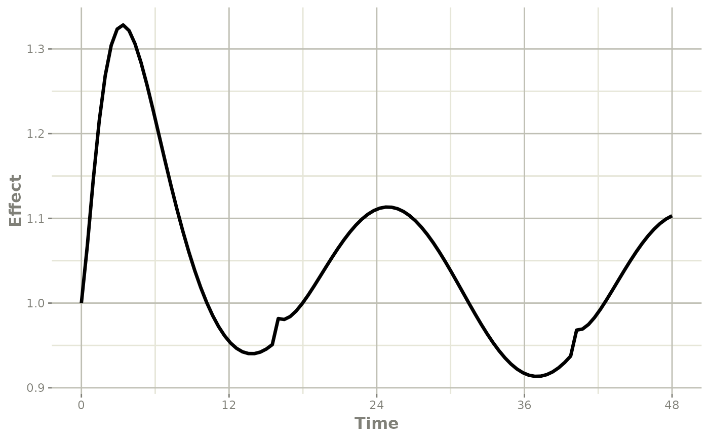

Individual Covariates
If there is an individual covariate you wish to solve for you may
specify it by the iCov dataset:
## rxode2 4.0.2 using 2 threads (see ?getRxThreads)
## no cache: create with `rxCreateCache()`## udunits database from /usr/share/xml/udunits/udunits2.xml
library(xgxr)
mod3 <- function() {
ini({
TKA <- 2.94E-01
## Clearance with individuals
TCL <- 1.86E+01
TV2 <-4.02E+01
TQ <-1.05E+01
TV3 <-2.97E+02
TKin <- 1
TKout <- 1
TEC50 <-200
})
model({
KA <- TKA
CL <- TCL * (WT / 70) ^ 0.75
V2 <- TV2
Q <- TQ
V3 <- TV3
Kin <- TKin
Kout <- TKout
EC50 <- TEC50
Tz <- 8
amp <- 0.1
C2 <- central/V2
C3 <- peri/V3
d/dt(depot) <- -KA*depot
d/dt(central) <- KA*depot - CL*C2 - Q*C2 + Q*C3
d/dt(peri) <- Q*C2 - Q*C3
d/dt(eff) <- Kin - Kout*(1-C2/(EC50+C2))*eff
eff(0) <- 1 ## This specifies that the effect compartment starts at 1.
})
}
ev <- et(amount.units="mg", time.units="hours") %>%
et(amt=10000, cmt=1) %>%
et(0,48,length.out=100) %>%
et(id=1:4)
set.seed(10)
rxSetSeed(10)
## Now use iCov to simulate a 4-id sample
r1 <- solve(mod3, ev,
# Create individual covariate data-frame
iCov=data.frame(id=1:4, WT=rnorm(4, 70, 10)))## ℹ parameter labels from comments are typically ignored in non-interactive mode## ℹ Need to run with the source intact to parse comments## C model:
## // Define translation state order for 4 states
## #define __DDT0__ 0 // depot
## #define _DEPOT_ 0 // depot
## #define __DDT1__ 1 // central
## #define _CENTRAL_ 1 // central
## #define __DDT2__ 2 // peri
## #define __DDT3__ 3 // eff
## // Define 10 LHS values
## #define _LHS_0_ 0 // KA
## #define _LHS_1_ 1 // CL
## #define _LHS_2_ 2 // V2
## #define _LHS_3_ 3 // Q
## #define _LHS_4_ 4 // V3
## #define _LHS_5_ 5 // Kin
## #define _LHS_6_ 6 // Kout
## #define _LHS_7_ 7 // EC50
## #define _LHS_8_ 8 // C2
## #define _LHS_9_ 9 // C3
## #define _getRxSolve_ _rx14f172af8145a690eda8fb18e2ff73870__getRxSolve__cQeZ
## #define _evalUdf _rx14f172af8145a690eda8fb18e2ff73871__evalUdf_7aMQ
## #define _solveData _rx14f172af8145a690eda8fb18e2ff73872__solveData_3GOp
## #define _assign_ptr _rx14f172af8145a690eda8fb18e2ff73873__assign_ptr_rcmM
## #define _rxRmModelLib _rx14f172af8145a690eda8fb18e2ff73874__rxRmModelLib_PhpE
## #define _rxGetModelLib _rx14f172af8145a690eda8fb18e2ff73875__rxGetModelLib_lMX5
## #define _old_c _rx14f172af8145a690eda8fb18e2ff73876__old_c_AtQk
## #define _ptrid _rx14f172af8145a690eda8fb18e2ff73877__ptrid_pxgV
## #define _rxIsCurrentC _rx14f172af8145a690eda8fb18e2ff73878__rxIsCurrentC_HE0j
## #define _sumPS _rx14f172af8145a690eda8fb18e2ff73879__sumPS_F91U
## #define _prodPS _rx14f172af8145a690eda8fb18e2ff738710__prodPS_6nLw
## #define _prodType _rx14f172af8145a690eda8fb18e2ff738711__prodType_FTBa
## #define _sumType _rx14f172af8145a690eda8fb18e2ff738712__sumType_SSOV
## #define _update_par_ptr _rx14f172af8145a690eda8fb18e2ff738713__update_par_ptr_17TO
## #define _getParCov _rx14f172af8145a690eda8fb18e2ff738714__getParCov_plZR
## #define _rxode2_rxAssignPtr _rx14f172af8145a690eda8fb18e2ff738715__rxode2_rxAssignPtr_5D4X
## #define _rxQr _rx14f172af8145a690eda8fb18e2ff738716__rxQr_dW2X
## #define _compareFactorVal _rx14f172af8145a690eda8fb18e2ff738717__compareFactorVal_NxFC
## #define _sum _rx14f172af8145a690eda8fb18e2ff738718__sum_rSDc
## #define _udf _rx14f172af8145a690eda8fb18e2ff738719__udf_C1nH
## #define _sign _rx14f172af8145a690eda8fb18e2ff738720__sign_AAUi
## #define _prod _rx14f172af8145a690eda8fb18e2ff738721__prod_aWNp
## #define _max _rx14f172af8145a690eda8fb18e2ff738722__max_FXk1
## #define _min _rx14f172af8145a690eda8fb18e2ff738723__min_L3MP
## #define _transit4P _rx14f172af8145a690eda8fb18e2ff738724__transit4P_utyT
## #define _transit3P _rx14f172af8145a690eda8fb18e2ff738725__transit3P_gQmq
## #define _assignFuns0 _rx14f172af8145a690eda8fb18e2ff738726__assignFuns0_BWhu
## #define _assignFuns _rx14f172af8145a690eda8fb18e2ff738727__assignFuns_Gnch
## #define _rxord _rx14f172af8145a690eda8fb18e2ff738728__rxord_6KKZ
## #define __assignFuns2 _rx14f172af8145a690eda8fb18e2ff738729___assignFuns2_CDdL
## #define _llikCauchyDscale _rx14f172af8145a690eda8fb18e2ff738730__llikCauchyDscale_rwt2
## #define _llikCauchyDlocation _rx14f172af8145a690eda8fb18e2ff738731__llikCauchyDlocation_lEJH
## #define _llikCauchy _rx14f172af8145a690eda8fb18e2ff738732__llikCauchy_ir6Y
## #define _llikGammaDrate _rx14f172af8145a690eda8fb18e2ff738733__llikGammaDrate_eE4v
## #define _llikGammaDshape _rx14f172af8145a690eda8fb18e2ff738734__llikGammaDshape_9oPb
## #define _llikGamma _rx14f172af8145a690eda8fb18e2ff738735__llikGamma_4usC
## #define _llikWeibullDscale _rx14f172af8145a690eda8fb18e2ff738736__llikWeibullDscale_49KB
## #define _llikWeibullDshape _rx14f172af8145a690eda8fb18e2ff738737__llikWeibullDshape_9Iw6
## #define _llikWeibull _rx14f172af8145a690eda8fb18e2ff738738__llikWeibull_iWPP
## #define _llikUnifDbeta _rx14f172af8145a690eda8fb18e2ff738739__llikUnifDbeta_lGly
## #define _llikUnifDalpha _rx14f172af8145a690eda8fb18e2ff738740__llikUnifDalpha_faYl
## #define _llikUnif _rx14f172af8145a690eda8fb18e2ff738741__llikUnif_khzS
## #define _llikGeomDp _rx14f172af8145a690eda8fb18e2ff738742__llikGeomDp_7ETL
## #define _llikGeom _rx14f172af8145a690eda8fb18e2ff738743__llikGeom_K7QT
## #define _llikFDdf2 _rx14f172af8145a690eda8fb18e2ff738744__llikFDdf2_Wcsg
## #define _llikFDdf1 _rx14f172af8145a690eda8fb18e2ff738745__llikFDdf1_iB44
## #define _llikF _rx14f172af8145a690eda8fb18e2ff738746__llikF_3WoR
## #define _llikExpDrate _rx14f172af8145a690eda8fb18e2ff738747__llikExpDrate_YHti
## #define _llikExp _rx14f172af8145a690eda8fb18e2ff738748__llikExp_DXfq
## #define _llikChisqDdf _rx14f172af8145a690eda8fb18e2ff738749__llikChisqDdf_9flz
## #define _llikChisq _rx14f172af8145a690eda8fb18e2ff738750__llikChisq_Gsif
## #define _llikTDsd _rx14f172af8145a690eda8fb18e2ff738751__llikTDsd_kP3l
## #define _llikTDmean _rx14f172af8145a690eda8fb18e2ff738752__llikTDmean_qWr7
## #define _llikTDdf _rx14f172af8145a690eda8fb18e2ff738753__llikTDdf_6grl
## #define _llikT _rx14f172af8145a690eda8fb18e2ff738754__llikT_JENn
## #define _llikBetaDshape2 _rx14f172af8145a690eda8fb18e2ff738755__llikBetaDshape2_oOWS
## #define _llikBetaDshape1 _rx14f172af8145a690eda8fb18e2ff738756__llikBetaDshape1_qDlH
## #define _llikBeta _rx14f172af8145a690eda8fb18e2ff738757__llikBeta_tWpj
## #define _llikNbinomMuDmu _rx14f172af8145a690eda8fb18e2ff738758__llikNbinomMuDmu_JXZ3
## #define _llikNbinomMu _rx14f172af8145a690eda8fb18e2ff738759__llikNbinomMu_Uh7t
## #define _llikNbinomDprob _rx14f172af8145a690eda8fb18e2ff738760__llikNbinomDprob_jjBs
## #define _llikNbinom _rx14f172af8145a690eda8fb18e2ff738761__llikNbinom_bD8o
## #define _llikBinomDprob _rx14f172af8145a690eda8fb18e2ff738762__llikBinomDprob_MR7p
## #define _llikBinom _rx14f172af8145a690eda8fb18e2ff738763__llikBinom_vIjP
## #define _llikPoisDlambda _rx14f172af8145a690eda8fb18e2ff738764__llikPoisDlambda_1OFS
## #define _llikPois _rx14f172af8145a690eda8fb18e2ff738765__llikPois_KsAz
## #define _llikNormDsd _rx14f172af8145a690eda8fb18e2ff738766__llikNormDsd_gElz
## #define _llikNormDmean _rx14f172af8145a690eda8fb18e2ff738767__llikNormDmean_kjp1
## #define _llikNorm _rx14f172af8145a690eda8fb18e2ff738768__llikNorm_2z7v
## #define simeps _rx14f172af8145a690eda8fb18e2ff738769_simeps_1yvY
## #define simeta _rx14f172af8145a690eda8fb18e2ff738770_simeta_esry
## #define expit _rx14f172af8145a690eda8fb18e2ff738771_expit_hzXR
## #define logit _rx14f172af8145a690eda8fb18e2ff738772_logit_u5XA
## #define gammapDer _rx14f172af8145a690eda8fb18e2ff738773_gammapDer_L0Oa
## #define lowergamma _rx14f172af8145a690eda8fb18e2ff738774_lowergamma_shCN
## #define uppergamma _rx14f172af8145a690eda8fb18e2ff738775_uppergamma_Bo0M
## #define gammaqInva _rx14f172af8145a690eda8fb18e2ff738776_gammaqInva_jOs8
## #define gammaqInv _rx14f172af8145a690eda8fb18e2ff738777_gammaqInv_7C3a
## #define gammapInva _rx14f172af8145a690eda8fb18e2ff738778_gammapInva_kaIz
## #define gammapInv _rx14f172af8145a690eda8fb18e2ff738779_gammapInv_hGFN
## #define gammaq _rx14f172af8145a690eda8fb18e2ff738780_gammaq_KxFa
## #define gammap _rx14f172af8145a690eda8fb18e2ff738781_gammap_pC4k
## #define phi _rx14f172af8145a690eda8fb18e2ff738782_phi_Zj4v
## #define d2ELUa _rx14f172af8145a690eda8fb18e2ff738783_d2ELUa_7lL7
## #define dELUa _rx14f172af8145a690eda8fb18e2ff738784_dELUa_Y8rq
## #define d2aELU _rx14f172af8145a690eda8fb18e2ff738785_d2aELU_Hoty
## #define d2ELU _rx14f172af8145a690eda8fb18e2ff738786_d2ELU_aeNT
## #define dELU _rx14f172af8145a690eda8fb18e2ff738787_dELU_pohj
## #define ELU _rx14f172af8145a690eda8fb18e2ff738788_ELU_fHjH
## #define dPReLUa1 _rx14f172af8145a690eda8fb18e2ff738789_dPReLUa1_5dQM
## #define dPReLUa _rx14f172af8145a690eda8fb18e2ff738790_dPReLUa_jxyM
## #define dPReLU _rx14f172af8145a690eda8fb18e2ff738791_dPReLU_N5bT
## #define PReLU _rx14f172af8145a690eda8fb18e2ff738792_PReLU_kJW4
## #define dSwish _rx14f172af8145a690eda8fb18e2ff738793_dSwish_XOqp
## #define Swish _rx14f172af8145a690eda8fb18e2ff738794_Swish_FP6W
## #define dlReLU _rx14f172af8145a690eda8fb18e2ff738795_dlReLU_4DNf
## #define lReLU _rx14f172af8145a690eda8fb18e2ff738796_lReLU_2g5j
## #define dSELU _rx14f172af8145a690eda8fb18e2ff738797_dSELU_8c8u
## #define SELU _rx14f172af8145a690eda8fb18e2ff738798_SELU_tgdk
## #define d4softplus _rx14f172af8145a690eda8fb18e2ff738799_d4softplus_uMoD
## #define d3softplus _rx14f172af8145a690eda8fb18e2ff7387100_d3softplus_8Igg
## #define d2softplus _rx14f172af8145a690eda8fb18e2ff7387101_d2softplus_qa61
## #define dsoftplus _rx14f172af8145a690eda8fb18e2ff7387102_dsoftplus_Q86S
## #define softplus _rx14f172af8145a690eda8fb18e2ff7387103_softplus_Yctr
## #define d4GELU _rx14f172af8145a690eda8fb18e2ff7387104_d4GELU_Kx2z
## #define d3GELU _rx14f172af8145a690eda8fb18e2ff7387105_d3GELU_df55
## #define d2GELU _rx14f172af8145a690eda8fb18e2ff7387106_d2GELU_lBL3
## #define dGELU _rx14f172af8145a690eda8fb18e2ff7387107_dGELU_KI9t
## #define GELU _rx14f172af8145a690eda8fb18e2ff7387108_GELU_NzO8
## #define dReLU _rx14f172af8145a690eda8fb18e2ff7387109_dReLU_faNu
## #define ReLU _rx14f172af8145a690eda8fb18e2ff7387110_ReLU_TDlv
## #define riweibull _rx14f172af8145a690eda8fb18e2ff7387111_riweibull_X2wM
## #define riunif _rx14f172af8145a690eda8fb18e2ff7387112_riunif_iHu0
## #define rit_ _rx14f172af8145a690eda8fb18e2ff7387113_rit__OE6M
## #define ripois _rx14f172af8145a690eda8fb18e2ff7387114_ripois_OKVz
## #define ribeta _rx14f172af8145a690eda8fb18e2ff7387115_ribeta_eamr
## #define rigamma _rx14f172af8145a690eda8fb18e2ff7387116_rigamma_CO0h
## #define rigeom _rx14f172af8145a690eda8fb18e2ff7387117_rigeom_8M52
## #define rif _rx14f172af8145a690eda8fb18e2ff7387118_rif_w8lE
## #define riexp _rx14f172af8145a690eda8fb18e2ff7387119_riexp_nvee
## #define richisq _rx14f172af8145a690eda8fb18e2ff7387120_richisq_hHRF
## #define ricauchy _rx14f172af8145a690eda8fb18e2ff7387121_ricauchy_XFMT
## #define rinbinomMu _rx14f172af8145a690eda8fb18e2ff7387122_rinbinomMu_MJqN
## #define rinbinom _rx14f172af8145a690eda8fb18e2ff7387123_rinbinom_rzpI
## #define ribinom _rx14f172af8145a690eda8fb18e2ff7387124_ribinom_4YB5
## #define rinorm _rx14f172af8145a690eda8fb18e2ff7387125_rinorm_Furm
## #define rxweibull _rx14f172af8145a690eda8fb18e2ff7387126_rxweibull_FJ7v
## #define rxunif _rx14f172af8145a690eda8fb18e2ff7387127_rxunif_8a9d
## #define rxt_ _rx14f172af8145a690eda8fb18e2ff7387128_rxt__eygz
## #define rxpois _rx14f172af8145a690eda8fb18e2ff7387129_rxpois_0bVb
## #define rxbeta _rx14f172af8145a690eda8fb18e2ff7387130_rxbeta_pzmx
## #define rxgamma _rx14f172af8145a690eda8fb18e2ff7387131_rxgamma_Xm0k
## #define rxgeom _rx14f172af8145a690eda8fb18e2ff7387132_rxgeom_V0Mz
## #define rxf _rx14f172af8145a690eda8fb18e2ff7387133_rxf_OBMR
## #define rxexp _rx14f172af8145a690eda8fb18e2ff7387134_rxexp_J0aj
## #define rxchisq _rx14f172af8145a690eda8fb18e2ff7387135_rxchisq_zPvV
## #define rxcauchy _rx14f172af8145a690eda8fb18e2ff7387136_rxcauchy_ECJJ
## #define rxnbinomMu _rx14f172af8145a690eda8fb18e2ff7387137_rxnbinomMu_kkzi
## #define rxnbinom _rx14f172af8145a690eda8fb18e2ff7387138_rxnbinom_cNW8
## #define rxbinom _rx14f172af8145a690eda8fb18e2ff7387139_rxbinom_7Ns1
## #define rxnorm _rx14f172af8145a690eda8fb18e2ff7387140_rxnorm_Wg6Z
## #define linCmtB _rx14f172af8145a690eda8fb18e2ff7387141_linCmtB_WGOj
## #define linCmtA _rx14f172af8145a690eda8fb18e2ff7387142_linCmtA_bOuz
## #include <rxode2_model_shared.h>
## #define __MAX_PROD__ 0
## #define _CMT CMT
## #define _SYNC_simeps_ for (int _svari=_solveData->neps; _svari--;){ if (_solveData->svar[_svari] == 0) {TKA = _PP[0];}; if (_solveData->svar[_svari] == 1) {TCL = _PP[1];}; if (_solveData->svar[_svari] == 2) {TV2 = _PP[2];}; if (_solveData->svar[_svari] == 3) {TQ = _PP[3];}; if (_solveData->svar[_svari] == 4) {TV3 = _PP[4];}; if (_solveData->svar[_svari] == 5) {TKin = _PP[5];}; if (_solveData->svar[_svari] == 6) {TKout = _PP[6];}; if (_solveData->svar[_svari] == 7) {TEC50 = _PP[7];}; if (_solveData->svar[_svari] == 8) {WT = _PP[8];}; if (_solveData->svar[_svari] == 9) {Tz = _PP[9];}; if (_solveData->svar[_svari] == 10) {amp = _PP[10];}; }
## #define _SYNC_simeta_ for (int _ovari=_solveData->neta; _ovari--;){ if (_solveData->ovar[_ovari] == 0) {TKA = _PP[0];}; if (_solveData->ovar[_ovari] == 1) {TCL = _PP[1];}; if (_solveData->ovar[_ovari] == 2) {TV2 = _PP[2];}; if (_solveData->ovar[_ovari] == 3) {TQ = _PP[3];}; if (_solveData->ovar[_ovari] == 4) {TV3 = _PP[4];}; if (_solveData->ovar[_ovari] == 5) {TKin = _PP[5];}; if (_solveData->ovar[_ovari] == 6) {TKout = _PP[6];}; if (_solveData->ovar[_ovari] == 7) {TEC50 = _PP[7];}; if (_solveData->ovar[_ovari] == 8) {WT = _PP[8];}; if (_solveData->ovar[_ovari] == 9) {Tz = _PP[9];}; if (_solveData->ovar[_ovari] == 10) {amp = _PP[10];}; }
## _getRxSolve_t _getRxSolve_;
## _simfun simeps;
## _simfun simeta;
## _udf_type _evalUdf=NULL;
## rx_solve *_solveData=NULL;
## rxode2_assign_ptr _assign_ptr=NULL;
## _rxRmModelLibType _rxRmModelLib=NULL;
## _rxGetModelLibType _rxGetModelLib=NULL;
## rxode2_ode_solver_old_c _old_c=NULL;
## rxode2_fn0i _ptrid=NULL;
## _rxIsCurrentC_type _rxIsCurrentC=NULL;
## _rxSumType _sumPS=NULL;
## _rxProdType _prodPS=NULL;
## rxode2_fn0i _prodType=NULL;
## rxode2_fn0i _sumType=NULL;
## _update_par_ptr_p _update_par_ptr=NULL;
## _getParCov_p _getParCov=NULL;
## linCmtA_p linCmtA;
## linCmtB_p linCmtB;
## _rx_asgn _rxode2_rxAssignPtr=NULL;
## _rx_asgn _rxQr=NULL;
## rxode2_fn phi;
## rxode2_fn ReLU;
## rxode2_fn dReLU;
## rxode2_fn GELU;
## rxode2_fn dGELU;
## rxode2_fn d2GELU;
## rxode2_fn d3GELU;
## rxode2_fn d4GELU;
## rxode2_fn softplus;
## rxode2_fn dsoftplus;
## rxode2_fn d2softplus;
## rxode2_fn d3softplus;
## rxode2_fn d4softplus;
## rxode2_fn SELU;
## rxode2_fn dSELU;
## rxode2_fn lReLU;
## rxode2_fn dlReLU;
## rxode2_fn Swish;
## rxode2_fn dSwish;
## rxode2_fn2 PReLU;
## rxode2_fn2 dPReLU;
## rxode2_fn2 dPReLUa;
## rxode2_fn2 dPReLUa1;
## rxode2_fn2 ELU;
## rxode2_fn2 dELU;
## rxode2_fn2 d2ELU;
## rxode2_fn2 d2aELU;
## rxode2_fn2 dELUa;
## rxode2_fn2 d2ELUa;
## rxode2_fn3 logit;
## rxode2_fn3 expit;
## rxode2_fn2 gammap;
## rxode2_fn2 gammaq;
## rxode2_fn2 lowergamma;
## rxode2_fn2 uppergamma;
## rxode2_fn2 gammapInv;
## rxode2_fn2 gammapDer;
## rxode2_fn2 gammapInva;
## rxode2_fn2 gammaqInv;
## rxode2_fn2 gammaqInva;
## rxode2i_fn2 rxnorm;
## rxode2i_rxbinom rxbinom;
## rxode2i_rxbinom rxnbinom;
## rxode2i_rxbinom rxnbinomMu;
## rxode2i_fn2 rxcauchy;
## rxode2i_fn rxchisq;
## rxode2i_fn rxexp;
## rxode2i_fn2 rxf;
## rxode2i_ifn rxgeom;
## rxode2i_fn2 rxgamma;
## rxode2i_fn2 rxbeta;
## rxode2i_ifn rxpois;
## rxode2i_fn rxt_;
## rxode2i_fn2 rxunif;
## rxode2i_fn2 rxweibull;
## rxode2i2_fn2 rinorm;
## rxode2i2_ribinom ribinom;
## rxode2i2_ribinom rinbinom;
## rxode2i2_ribinom rinbinomMu;
## rxode2i2_fn2 ricauchy;
## rxode2i2_fn richisq;
## rxode2i2_fn riexp;
## rxode2i2_fn2 rif;
## rxode2i2_ifn rigeom;
## rxode2i2_fn2 rigamma;
## rxode2i2_fn2 ribeta;
## rxode2i2_ifn ripois;
## rxode2i2_fn rit_;
## rxode2i2_fn2 riunif;
## rxode2i2_fn2 riweibull;
## rxode2_llikNormFun _llikNorm;
## rxode2_llikNormFun _llikNormDmean;
## rxode2_llikNormFun _llikNormDsd;
## rxode2_llikPoisFun _llikPois;
## rxode2_llikPoisFun _llikPoisDlambda;
## rxode2_llikBinomFun _llikBinom;
## rxode2_llikBinomFun _llikBinomDprob;
## rxode2_llikBinomFun _llikNbinom;
## rxode2_llikBinomFun _llikNbinomDprob;
## rxode2_llikBinomFun _llikNbinomMu;
## rxode2_llikBinomFun _llikNbinomMuDmu;
## rxode2_llikBetaFun _llikBeta;
## rxode2_llikBetaFun _llikBetaDshape1;
## rxode2_llikBetaFun _llikBetaDshape2;
## rxode2_llikTFun _llikT;
## rxode2_llikTFun _llikTDdf;
## rxode2_llikTFun _llikTDmean;
## rxode2_llikTFun _llikTDsd;
## rxode2_llikChisqFun _llikChisq;
## rxode2_llikChisqFun _llikChisqDdf;
## rxode2_llikExpFun _llikExp;
## rxode2_llikExpFun _llikExpDrate;
## rxode2_llikFFun _llikF;
## rxode2_llikFFun _llikFDdf1;
## rxode2_llikFFun _llikFDdf2;
## rxode2_llikGeomFun _llikGeom;
## rxode2_llikGeomFun _llikGeomDp;
## rxode2_llikUnifFun _llikUnif;
## rxode2_llikUnifFun _llikUnifDalpha;
## rxode2_llikUnifFun _llikUnifDbeta;
## rxode2_llikWeibullFun _llikWeibull;
## rxode2_llikWeibullFun _llikWeibullDshape;
## rxode2_llikWeibullFun _llikWeibullDscale;
## rxode2_llikGammaFun _llikGamma;
## rxode2_llikGammaFun _llikGammaDshape;
## rxode2_llikGammaFun _llikGammaDrate;
## rxode2_llikCauchyFun _llikCauchy;
## rxode2_llikCauchyFun _llikCauchyDlocation;
## rxode2_llikCauchyFun _llikCauchyDscale;
## rxode2_compareFactorVal_fn _compareFactorVal;
## #include "extraC.h"
## double _prod(double *input, double *p, int type, int n, ...){
## va_list valist;
## va_start(valist, n);
## for (unsigned int i = 0; i < n; i++){
## input[i] = va_arg(valist, double);
## }
## va_end(valist);
## return _prodPS(input, p, n, type);
## }
## double _udf(const char *funName, double *input, int n, ...) {
## if (n == -42) Rf_error("%s", "this has a ui user function that cannot be called directly");
## va_list valist;
## va_start(valist, n);
## for (unsigned int i = 0; i < n; i++){
## input[i] = va_arg(valist, double);
## }
## va_end(valist);
## return _evalUdf(funName, n, input);
## }
## double _sum(double *input, double *pld, int m, int type, int n, ...){
## va_list valist;
## va_start(valist, n);
## for (unsigned int i = 0; i < n; i++){
## input[i] = va_arg(valist, double);
## }
## va_end(valist);
## double ret = _sumPS(input, n, pld, m, type);
## if (type == 2 && m < 0){
## for (int i = -m; i--;){
## pld[i] = 0.0;
## }
## }
## return ret;
## }
## double _sign(unsigned int n, ...) {
## va_list valist;
## va_start(valist, n);
## double s = 1;
## for (unsigned int i = 0; i < n; i++) {
## s = sign(va_arg(valist, double))*s;
## if (s == 0){
## break;
## }
## }
## va_end(valist);
## return s;
## }
## double _rxord(int _cSub, unsigned int n, ...) {
## rx_solving_options_ind* ind = &(_solveData->subjects[_cSub]);
## if (!ind->inLhs) {
## return 1.0;
## }
## va_list valist;
## va_start(valist, n);
## double ret = 1.0;
## double p = 0.0;
## double u = rxunif(ind, 0.0, 1.0);
## int found = 0;
## for (unsigned int i = 0; i < n; i++) {
## p += va_arg(valist, double);
## if (!found) {
## if (u < p) {
## ret = (double)(i+1);
## found = 1;
## }
## }
## }
## if (!found) ret =(double)(n+1);
## va_end(valist);
## return ret;
## }
## double _max(unsigned int n, ...) {
## va_list valist;
## va_start(valist, n);
## double mx = NA_REAL;
## double tmp = 0;
## if (n >= 1){
## mx = va_arg(valist, double);
## for (unsigned int i = 1; i < n; i++) {
## tmp = va_arg(valist, double);
## if (tmp>mx) mx=tmp;
## }
## va_end(valist);
## }
## return mx;
## }
## double _min(unsigned int n, ...){
## va_list valist;
## va_start(valist, n);
## double mn = NA_REAL;
## double tmp = 0;
## if (n >= 1){
## mn = va_arg(valist, double);
## for (unsigned int i = 1; i < n; i++){
## tmp = va_arg(valist, double);
## if (tmp<mn) mn=tmp;
## }
## va_end(valist);
## }
## return mn;
## }
## double _transit4P(int cmt, double t, unsigned int id, double n, double mtt, double bio){
## double nd = (double) n;
## double ktr = (nd+1)/mtt;
## double lktr = _safe_log(nd+1)-_safe_log(mtt);
## double tlast = _solveData->subjects[id].tlastS[cmt];
## double dose = _solveData->subjects[id].curDoseS[cmt];
## if (ISNA(dose)) dose = 0.0;
## if (ISNA(tlast)) tlast = 0.0;
## double tad = (t-tlast);
## return exp(_safe_log(bio*dose)+lktr+n*(lktr+_safe_log(tad))-ktr*(tad)-lgamma1p(nd));
## }
## double _transit3P(int cmt, double t, unsigned int id, double n, double mtt){
## double nd = (double) n;
## double ktr = (nd+1)/mtt;
## double lktr = _safe_log(nd+1)-_safe_log(mtt);
## double tlast = _solveData->subjects[id].tlastS[cmt];
## if (ISNA(tlast)) tlast = 0.0;
## double tad = t-tlast;
## double podo = _solveData->subjects[id].curDoseS[cmt];
## if (ISNA(podo)) podo = 0.0;
## return exp(_safe_log(podo)+lktr+n*(lktr+_safe_log(tad))-ktr*(tad)-lgamma1p(nd));
## }
## void _assignFuns0(void) {
## _evalUdf = (_udf_type) R_GetCCallable("rxode2", "_rxode2_evalUdf");
## _getRxSolve_ = (_getRxSolve_t) R_GetCCallable("rxode2","getRxSolve_");
## _assign_ptr=(rxode2_assign_ptr) R_GetCCallable("rxode2","rxode2_assign_fn_pointers");
## _rxRmModelLib=(_rxRmModelLibType) R_GetCCallable("rxode2","rxRmModelLib");
## _rxGetModelLib=(_rxGetModelLibType) R_GetCCallable("rxode2","rxGetModelLib");
## _rxode2_rxAssignPtr=(_rx_asgn)R_GetCCallable("rxode2","_rxode2_rxAssignPtr");
## _rxQr=(_rx_asgn)R_GetCCallable("rxode2","_rxode2_rxQr");
## _rxIsCurrentC = (_rxIsCurrentC_type)R_GetCCallable("rxode2","rxIsCurrentC");
## _sumPS = (_rxSumType) R_GetCCallable("PreciseSums","PreciseSums_sum_r");
## _prodPS = (_rxProdType) R_GetCCallable("PreciseSums","PreciseSums_prod_r");
## _prodType=(rxode2_fn0i)R_GetCCallable("PreciseSums", "PreciseSums_prod_get");
## _sumType=(rxode2_fn0i)R_GetCCallable("PreciseSums", "PreciseSums_sum_get");
## _ptrid=(rxode2_fn0i)R_GetCCallable("rxode2", "rxode2_current_fn_pointer_id");
## _compareFactorVal=(rxode2_compareFactorVal_fn) R_GetCCallable("rxode2", "compareFactorVal");
## _update_par_ptr = (_update_par_ptr_p) R_GetCCallable("rxode2","_update_par_ptr");
## _getParCov = (_getParCov_p) R_GetCCallable("rxode2","_getParCov");
## // dynamic start
## _llikCauchyDscale = (rxode2_llikCauchyFun) R_GetCCallable("rxode2ll", "rxLlikCauchyDscale");
## _llikCauchyDlocation = (rxode2_llikCauchyFun) R_GetCCallable("rxode2ll", "rxLlikCauchyDlocation");
## _llikCauchy = (rxode2_llikCauchyFun) R_GetCCallable("rxode2ll", "rxLlikCauchy");
## _llikGammaDrate = (rxode2_llikGammaFun) R_GetCCallable("rxode2ll", "rxLlikGammaDrate");
## _llikGammaDshape = (rxode2_llikGammaFun) R_GetCCallable("rxode2ll", "rxLlikGammaDshape");
## _llikGamma = (rxode2_llikGammaFun) R_GetCCallable("rxode2ll", "rxLlikGamma");
## _llikWeibullDscale = (rxode2_llikWeibullFun) R_GetCCallable("rxode2ll", "rxLlikWeibullDscale");
## _llikWeibullDshape = (rxode2_llikWeibullFun) R_GetCCallable("rxode2ll", "rxLlikWeibullDshape");
## _llikWeibull = (rxode2_llikWeibullFun) R_GetCCallable("rxode2ll", "rxLlikWeibull");
## _llikUnifDbeta = (rxode2_llikUnifFun) R_GetCCallable("rxode2ll", "rxLlikUnifDbeta");
## _llikUnifDalpha = (rxode2_llikUnifFun) R_GetCCallable("rxode2ll", "rxLlikUnifDalpha");
## _llikUnif = (rxode2_llikUnifFun) R_GetCCallable("rxode2ll", "rxLlikUnif");
## _llikGeomDp = (rxode2_llikGeomFun) R_GetCCallable("rxode2ll", "rxLlikGeomDp");
## _llikGeom = (rxode2_llikGeomFun) R_GetCCallable("rxode2ll", "rxLlikGeom");
## _llikFDdf2 = (rxode2_llikFFun) R_GetCCallable("rxode2ll", "rxLlikFDdf2");
## _llikFDdf1 = (rxode2_llikFFun) R_GetCCallable("rxode2ll", "rxLlikFDdf1");
## _llikF = (rxode2_llikFFun) R_GetCCallable("rxode2ll", "rxLlikF");
## _llikExpDrate = (rxode2_llikExpFun) R_GetCCallable("rxode2ll", "rxLlikExpDrate");
## _llikExp = (rxode2_llikExpFun) R_GetCCallable("rxode2ll", "rxLlikExp");
## _llikChisqDdf = (rxode2_llikChisqFun) R_GetCCallable("rxode2ll", "rxLlikChisqDdf");
## _llikChisq = (rxode2_llikChisqFun) R_GetCCallable("rxode2ll", "rxLlikChisq");
## _llikTDsd = (rxode2_llikTFun) R_GetCCallable("rxode2ll", "rxLlikTDsd");
## _llikTDmean = (rxode2_llikTFun) R_GetCCallable("rxode2ll", "rxLlikTDmean");
## _llikTDdf = (rxode2_llikTFun) R_GetCCallable("rxode2ll", "rxLlikTDdf");
## _llikT = (rxode2_llikTFun) R_GetCCallable("rxode2ll", "rxLlikT");
## _llikBetaDshape2 = (rxode2_llikBetaFun) R_GetCCallable("rxode2ll", "rxLlikBetaDshape2");
## _llikBetaDshape1 = (rxode2_llikBetaFun) R_GetCCallable("rxode2ll", "rxLlikBetaDshape1");
## _llikBeta = (rxode2_llikBetaFun) R_GetCCallable("rxode2ll", "rxLlikBeta");
## _llikNbinomMuDmu = (rxode2_llikBinomFun) R_GetCCallable("rxode2ll", "rxLlikNbinomMuDmu");
## _llikNbinomMu = (rxode2_llikBinomFun) R_GetCCallable("rxode2ll", "rxLlikNbinomMu");
## _llikNbinomDprob = (rxode2_llikBinomFun) R_GetCCallable("rxode2ll", "rxLlikNbinomDprob");
## _llikNbinom = (rxode2_llikBinomFun) R_GetCCallable("rxode2ll", "rxLlikNbinom");
## _llikBinomDprob = (rxode2_llikBinomFun) R_GetCCallable("rxode2ll", "rxLlikBinomDprob");
## _llikBinom = (rxode2_llikBinomFun) R_GetCCallable("rxode2ll", "rxLlikBinom");
## _llikPoisDlambda = (rxode2_llikPoisFun) R_GetCCallable("rxode2ll", "rxLlikPoisDlambda");
## _llikPois = (rxode2_llikPoisFun) R_GetCCallable("rxode2ll", "rxLlikPois");
## _llikNormDsd = (rxode2_llikNormFun) R_GetCCallable("rxode2ll", "rxLlikNormDsd");
## _llikNormDmean = (rxode2_llikNormFun) R_GetCCallable("rxode2ll", "rxLlikNormDmean");
## _llikNorm = (rxode2_llikNormFun) R_GetCCallable("rxode2ll", "rxLlikNorm");
## simeps = (_simfun) R_GetCCallable("rxode2", "simeps");
## simeta = (_simfun) R_GetCCallable("rxode2", "simeta");
## expit = (rxode2_fn3) R_GetCCallable("rxode2", "expit");
## logit = (rxode2_fn3) R_GetCCallable("rxode2", "logit");
## gammapDer = (rxode2_fn2) R_GetCCallable("rxode2", "gammapDer");
## lowergamma = (rxode2_fn2) R_GetCCallable("rxode2", "lowergamma");
## uppergamma = (rxode2_fn2) R_GetCCallable("rxode2", "uppergamma");
## gammaqInva = (rxode2_fn2) R_GetCCallable("rxode2", "gammaqInva");
## gammaqInv = (rxode2_fn2) R_GetCCallable("rxode2", "gammaqInv");
## gammapInva = (rxode2_fn2) R_GetCCallable("rxode2", "gammapInva");
## gammapInv = (rxode2_fn2) R_GetCCallable("rxode2", "gammapInv");
## gammaq = (rxode2_fn2) R_GetCCallable("rxode2", "gammaq");
## gammap = (rxode2_fn2) R_GetCCallable("rxode2", "gammap");
## phi = (rxode2_fn) R_GetCCallable("rxode2", "phi");
## d2ELUa = (rxode2_fn2) R_GetCCallable("rxode2", "d2ELUa");
## dELUa = (rxode2_fn2) R_GetCCallable("rxode2", "dELUa");
## d2aELU = (rxode2_fn2) R_GetCCallable("rxode2", "d2aELU");
## d2ELU = (rxode2_fn2) R_GetCCallable("rxode2", "d2ELU");
## dELU = (rxode2_fn2) R_GetCCallable("rxode2", "dELU");
## ELU = (rxode2_fn2) R_GetCCallable("rxode2", "ELU");
## dPReLUa1 = (rxode2_fn2) R_GetCCallable("rxode2", "dPReLUa1");
## dPReLUa = (rxode2_fn2) R_GetCCallable("rxode2", "dPReLUa");
## dPReLU = (rxode2_fn2) R_GetCCallable("rxode2", "dPReLU");
## PReLU = (rxode2_fn2) R_GetCCallable("rxode2", "PReLU");
## dSwish = (rxode2_fn) R_GetCCallable("rxode2", "dSwish");
## Swish = (rxode2_fn) R_GetCCallable("rxode2", "Swish");
## dlReLU = (rxode2_fn) R_GetCCallable("rxode2", "dlReLU");
## lReLU = (rxode2_fn) R_GetCCallable("rxode2", "lReLU");
## dSELU = (rxode2_fn) R_GetCCallable("rxode2", "dSELU");
## SELU = (rxode2_fn) R_GetCCallable("rxode2", "SELU");
## d4softplus = (rxode2_fn) R_GetCCallable("rxode2", "d4softplus");
## d3softplus = (rxode2_fn) R_GetCCallable("rxode2", "d3softplus");
## d2softplus = (rxode2_fn) R_GetCCallable("rxode2", "d2softplus");
## dsoftplus = (rxode2_fn) R_GetCCallable("rxode2", "dsoftplus");
## softplus = (rxode2_fn) R_GetCCallable("rxode2", "softplus");
## d4GELU = (rxode2_fn) R_GetCCallable("rxode2", "d4GELU");
## d3GELU = (rxode2_fn) R_GetCCallable("rxode2", "d3GELU");
## d2GELU = (rxode2_fn) R_GetCCallable("rxode2", "d2GELU");
## dGELU = (rxode2_fn) R_GetCCallable("rxode2", "dGELU");
## GELU = (rxode2_fn) R_GetCCallable("rxode2", "GELU");
## dReLU = (rxode2_fn) R_GetCCallable("rxode2", "dReLU");
## ReLU = (rxode2_fn) R_GetCCallable("rxode2", "ReLU");
## riweibull = (rxode2i2_fn2) R_GetCCallable("rxode2", "riweibull");
## riunif = (rxode2i2_fn2) R_GetCCallable("rxode2", "riunif");
## rit_ = (rxode2i2_fn) R_GetCCallable("rxode2", "rit_");
## ripois = (rxode2i2_ifn) R_GetCCallable("rxode2", "ripois");
## ribeta = (rxode2i2_fn2) R_GetCCallable("rxode2", "ribeta");
## rigamma = (rxode2i2_fn2) R_GetCCallable("rxode2", "rigamma");
## rigeom = (rxode2i2_ifn) R_GetCCallable("rxode2", "rigeom");
## rif = (rxode2i2_fn2) R_GetCCallable("rxode2", "rif");
## riexp = (rxode2i2_fn) R_GetCCallable("rxode2", "riexp");
## richisq = (rxode2i2_fn) R_GetCCallable("rxode2", "richisq");
## ricauchy = (rxode2i2_fn2) R_GetCCallable("rxode2", "ricauchy");
## rinbinomMu = (rxode2i2_ribinom) R_GetCCallable("rxode2", "rinbinomMu");
## rinbinom = (rxode2i2_ribinom) R_GetCCallable("rxode2", "rinbinom");
## ribinom = (rxode2i2_ribinom) R_GetCCallable("rxode2", "ribinom");
## rinorm = (rxode2i2_fn2) R_GetCCallable("rxode2", "rinorm");
## rxweibull = (rxode2i_fn2) R_GetCCallable("rxode2", "rxweibull");
## rxunif = (rxode2i_fn2) R_GetCCallable("rxode2", "rxunif");
## rxt_ = (rxode2i_fn) R_GetCCallable("rxode2", "rxt_");
## rxpois = (rxode2i_ifn) R_GetCCallable("rxode2", "rxpois");
## rxbeta = (rxode2i_fn2) R_GetCCallable("rxode2", "rxbeta");
## rxgamma = (rxode2i_fn2) R_GetCCallable("rxode2", "rxgamma");
## rxgeom = (rxode2i_ifn) R_GetCCallable("rxode2", "rxgeom");
## rxf = (rxode2i_fn2) R_GetCCallable("rxode2", "rxf");
## rxexp = (rxode2i_fn) R_GetCCallable("rxode2", "rxexp");
## rxchisq = (rxode2i_fn) R_GetCCallable("rxode2", "rxchisq");
## rxcauchy = (rxode2i_fn2) R_GetCCallable("rxode2", "rxcauchy");
## rxnbinomMu = (rxode2i_rxbinom) R_GetCCallable("rxode2", "rxnbinomMu");
## rxnbinom = (rxode2i_rxbinom) R_GetCCallable("rxode2", "rxnbinom");
## rxbinom = (rxode2i_rxbinom) R_GetCCallable("rxode2", "rxbinom");
## rxnorm = (rxode2i_fn2) R_GetCCallable("rxode2", "rxnorm");
## linCmtB = (linCmtB_p) R_GetCCallable("rxode2", "linCmtB");
## linCmtA = (linCmtA_p) R_GetCCallable("rxode2", "linCmtA");
## // dynamic stop
## _solveData = _getRxSolve_();
## }
## void _assignFuns(void) {
## if (_assign_ptr == NULL){
## _assignFuns0();
## }
## }
## void __assignFuns2(rx_solve rx,
## rx_solving_options op,
## t_F f,
## t_LAG lag,
## t_RATE rate,
## t_DUR dur,
## t_calc_mtime mtime,
## t_ME me,
## t_IndF indf,
## t_getTime gettime,
## t_locateTimeIndex timeindex,
## t_handle_evidL handleEvid,
## t_getDur getdur) {
## // assign start
## static rxode2_assignFuns2_t rxode2_assignFuns2 = NULL;
## if (rxode2_assignFuns2 == NULL) rxode2_assignFuns2 = (rxode2_assignFuns2_t)(R_GetCCallable("rxode2", "_rxode2_assignFuns2"));
## rxode2_assignFuns2(rx, op, f, lag, rate, dur, mtime, me, indf, gettime, timeindex, handleEvid, getdur);
## // assign stop
## }
## extern void rx_67629c27e5da09d61f2b9775c5c9bf2f__ode_solver_solvedata (rx_solve *solve){
## _solveData = solve;
## }
## extern rx_solve *rx_67629c27e5da09d61f2b9775c5c9bf2f__ode_solver_get_solvedata(void){
## return _solveData;
## }
## SEXP rx_67629c27e5da09d61f2b9775c5c9bf2f__model_vars(void);
##
##
## // prj-specific differential eqns
## void rx_67629c27e5da09d61f2b9775c5c9bf2f__dydt(int *_neq, double __t, double *__zzStateVar__, double *__DDtStateVar__)
## {
## int _itwhile = 0;
## (void)_itwhile;
## int _cSub = _neq[1];
## double t = __t + _solveData->subjects[_neq[1]].curShift;
## (void)t;
## rx_solving_options_ind *_ind = &(_solveData->subjects[_cSub]);
## _ind->_rxFlag=1;
## double TKA = NA_REAL;
## double TCL = NA_REAL;
## double TV2 = NA_REAL;
## double TQ = NA_REAL;
## double TV3 = NA_REAL;
## double TKin = NA_REAL;
## double TKout = NA_REAL;
## double TEC50 = NA_REAL;
## double WT = NA_REAL;
## double KA = NA_REAL;
## double CL = NA_REAL;
## double V2 = NA_REAL;
## double Q = NA_REAL;
## double V3 = NA_REAL;
## double Kin = NA_REAL;
## double Kout = NA_REAL;
## double EC50 = NA_REAL;
## double Tz = NA_REAL;
## double amp = NA_REAL;
## double C2 = NA_REAL;
## double central = NA_REAL;
## double C3 = NA_REAL;
## double peri = NA_REAL;
## double depot = NA_REAL;
## double eff = NA_REAL;
##
## (void)t;
## (void)TKA;
## (void)TCL;
## (void)TV2;
## (void)TQ;
## (void)TV3;
## (void)TKin;
## (void)TKout;
## (void)TEC50;
## (void)WT;
## (void)KA;
## (void)CL;
## (void)V2;
## (void)Q;
## (void)V3;
## (void)Kin;
## (void)Kout;
## (void)EC50;
## (void)Tz;
## (void)amp;
## (void)C2;
## (void)central;
## (void)C3;
## (void)peri;
## (void)depot;
## (void)eff;
##
## KA = _PL[0];
## CL = _PL[1];
## V2 = _PL[2];
## Q = _PL[3];
## V3 = _PL[4];
## Kin = _PL[5];
## Kout = _PL[6];
## EC50 = _PL[7];
## C2 = _PL[8];
## C3 = _PL[9];
##
## _update_par_ptr(__t, _cSub, _solveData, _idx);
## TKA = _PP[0];
## TCL = _PP[1];
## TV2 = _PP[2];
## TQ = _PP[3];
## TV3 = _PP[4];
## TKin = _PP[5];
## TKout = _PP[6];
## TEC50 = _PP[7];
## WT = _PP[8];
## Tz = _PP[9];
## amp = _PP[10];
##
## depot = __zzStateVar__[__DDT0__]*((double)(_ON[__DDT0__]));
## central = __zzStateVar__[__DDT1__]*((double)(_ON[__DDT1__]));
## peri = __zzStateVar__[__DDT2__]*((double)(_ON[__DDT2__]));
## eff = __zzStateVar__[__DDT3__]*((double)(_ON[__DDT3__]));
##
## KA =TKA;
## CL =TCL*Rx_pow((WT/_div0(70)),0.75);
## V2 =TV2;
## Q =TQ;
## V3 =TV3;
## Kin =TKin;
## Kout =TKout;
## EC50 =TEC50;
## C2 =central/_div0(V2);
## C3 =peri/_div0(V3);
## __DDtStateVar__[__DDT0__] = ((double)(_ON[__DDT0__]))*(_IR[__DDT0__] -KA*depot);
## __DDtStateVar__[__DDT1__] = ((double)(_ON[__DDT1__]))*(_IR[__DDT1__] + KA*depot-CL*C2-Q*C2+Q*C3);
## __DDtStateVar__[__DDT2__] = ((double)(_ON[__DDT2__]))*(_IR[__DDT2__] + Q*C2-Q*C3);
## __DDtStateVar__[__DDT3__] = ((double)(_ON[__DDT3__]))*(_IR[__DDT3__] + Kin-Kout*(1-C2/_div0((EC50+C2)))*eff);
## (&_solveData->subjects[_cSub])->dadt_counter[0]++;
## }
##
## // Jacobian derived vars
## void rx_67629c27e5da09d61f2b9775c5c9bf2f__calc_jac(int *_neq, double __t, double *__zzStateVar__, double *__PDStateVar__, unsigned int __NROWPD__) {
## int _itwhile = 0;
## (void)_itwhile;
## int _cSub=_neq[1];
## double t = __t + _solveData->subjects[_neq[1]].curShift;
## (void)t;
## rx_solving_options_ind *_ind = &(_solveData->subjects[_cSub]);
## _ind->_rxFlag=2;
## (&_solveData->subjects[_cSub])->jac_counter[0]++;
## }
## // Functional based initial conditions.
## void rx_67629c27e5da09d61f2b9775c5c9bf2f__inis(int _cSub, double *__zzStateVar__){
## int _itwhile = 0;
## (void)_itwhile;
##
## rx_solving_options_ind *_ind = &(_solveData->subjects[_cSub]);
## _ind->_rxFlag=3;
## }
## // prj-specific derived vars
## void rx_67629c27e5da09d61f2b9775c5c9bf2f__calc_lhs(int _cSub, double __t, double *__zzStateVar__, double *_lhs) {
## int _itwhile = 0;
## (void)_itwhile;
## double t = __t + _solveData->subjects[_cSub].curShift;
## (void)t;
## rx_solving_options_ind *_ind = &(_solveData->subjects[_cSub]);
## _ind->_rxFlag=11;
## double __DDtStateVar_0__;
## double __DDtStateVar_1__;
## double __DDtStateVar_2__;
## double __DDtStateVar_3__;
## double TKA = NA_REAL;
## double TCL = NA_REAL;
## double TV2 = NA_REAL;
## double TQ = NA_REAL;
## double TV3 = NA_REAL;
## double TKin = NA_REAL;
## double TKout = NA_REAL;
## double TEC50 = NA_REAL;
## double WT = NA_REAL;
## double KA = NA_REAL;
## double CL = NA_REAL;
## double V2 = NA_REAL;
## double Q = NA_REAL;
## double V3 = NA_REAL;
## double Kin = NA_REAL;
## double Kout = NA_REAL;
## double EC50 = NA_REAL;
## double Tz = NA_REAL;
## double amp = NA_REAL;
## double C2 = NA_REAL;
## double central = NA_REAL;
## double C3 = NA_REAL;
## double peri = NA_REAL;
## double depot = NA_REAL;
## double eff = NA_REAL;
##
## (void)t;
## (void)__DDtStateVar_0__;
## (void)__DDtStateVar_1__;
## (void)__DDtStateVar_2__;
## (void)__DDtStateVar_3__;
## (void)TKA;
## (void)TCL;
## (void)TV2;
## (void)TQ;
## (void)TV3;
## (void)TKin;
## (void)TKout;
## (void)TEC50;
## (void)WT;
## (void)KA;
## (void)CL;
## (void)V2;
## (void)Q;
## (void)V3;
## (void)Kin;
## (void)Kout;
## (void)EC50;
## (void)Tz;
## (void)amp;
## (void)C2;
## (void)central;
## (void)C3;
## (void)peri;
## (void)depot;
## (void)eff;
##
## KA = _PL[0];
## CL = _PL[1];
## V2 = _PL[2];
## Q = _PL[3];
## V3 = _PL[4];
## Kin = _PL[5];
## Kout = _PL[6];
## EC50 = _PL[7];
## C2 = _PL[8];
## C3 = _PL[9];
##
## _update_par_ptr(__t, _cSub, _solveData, _idx);
## TKA = _PP[0];
## TCL = _PP[1];
## TV2 = _PP[2];
## TQ = _PP[3];
## TV3 = _PP[4];
## TKin = _PP[5];
## TKout = _PP[6];
## TEC50 = _PP[7];
## WT = _PP[8];
## Tz = _PP[9];
## amp = _PP[10];
##
## depot = __zzStateVar__[__DDT0__]*((double)(_ON[__DDT0__]));
## central = __zzStateVar__[__DDT1__]*((double)(_ON[__DDT1__]));
## peri = __zzStateVar__[__DDT2__]*((double)(_ON[__DDT2__]));
## eff = __zzStateVar__[__DDT3__]*((double)(_ON[__DDT3__]));
##
## KA =TKA;
## CL =TCL*Rx_pow((WT/_div0(70)),0.75);
## V2 =TV2;
## Q =TQ;
## V3 =TV3;
## Kin =TKin;
## Kout =TKout;
## EC50 =TEC50;
## C2 =central/_div0(V2);
## C3 =peri/_div0(V3);
## __DDtStateVar_0__ = ((double)(_ON[__DDT0__]))*(_IR[__DDT0__] -KA*depot);
## __DDtStateVar_1__ = ((double)(_ON[__DDT1__]))*(_IR[__DDT1__] + KA*depot-CL*C2-Q*C2+Q*C3);
## __DDtStateVar_2__ = ((double)(_ON[__DDT2__]))*(_IR[__DDT2__] + Q*C2-Q*C3);
## __DDtStateVar_3__ = ((double)(_ON[__DDT3__]))*(_IR[__DDT3__] + Kin-Kout*(1-C2/_div0((EC50+C2)))*eff);
##
## _lhs[_LHS_0_]=KA;
## _lhs[_LHS_1_]=CL;
## _lhs[_LHS_2_]=V2;
## _lhs[_LHS_3_]=Q;
## _lhs[_LHS_4_]=V3;
## _lhs[_LHS_5_]=Kin;
## _lhs[_LHS_6_]=Kout;
## _lhs[_LHS_7_]=EC50;
## _lhs[_LHS_8_]=C2;
## _lhs[_LHS_9_]=C3;
## }
## // Functional based bioavailability
## double rx_67629c27e5da09d61f2b9775c5c9bf2f__F(int _cSub, int _cmt, double _amt, double __t, double *__zzStateVar__){
## return _amt;
## }
## // Functional based absorption lag
## double rx_67629c27e5da09d61f2b9775c5c9bf2f__Lag(int _cSub, int _cmt, double __t, double *__zzStateVar__){
## return __t;
## }
## // Modeled zero-order rate
## double rx_67629c27e5da09d61f2b9775c5c9bf2f__Rate(int _cSub, int _cmt, double _amt, double __t, double *__zzStateVar__){
## return 0.0;
## }
## // Modeled zero-order duration
## double rx_67629c27e5da09d61f2b9775c5c9bf2f__Dur(int _cSub, int _cmt, double _amt, double __t){
## return 0.0;
## }
## // Model Times
## void rx_67629c27e5da09d61f2b9775c5c9bf2f__mtime(int _cSub, double *_mtime){
## }
## // Matrix Exponential (0)
## void rx_67629c27e5da09d61f2b9775c5c9bf2f__ME(int _cSub, double _t, double __t, double *_mat, const double *__zzStateVar__){
## int _itwhile = 0;
## (void)_itwhile;
## double t = __t + _solveData->subjects[_cSub].curShift;
## (void)t;
## rx_solving_options_ind *_ind = &(_solveData->subjects[_cSub]);
## _ind->_rxFlag=9;
## }
## // Inductive linearization Matf
## void rx_67629c27e5da09d61f2b9775c5c9bf2f__IndF(int _cSub, double _t, double __t, double *_matf){
## int _itwhile = 0;
## (void)_itwhile;
## double t = __t + _solveData->subjects[_cSub].curShift;
## (void)t;
## rx_solving_options_ind *_ind = &(_solveData->subjects[_cSub]);
## _ind->_rxFlag=10;
## }
## extern SEXP rx_67629c27e5da09d61f2b9775c5c9bf2f__model_vars(void){
## int pro=0;
## SEXP _mv = PROTECT(_rxGetModelLib("rx_67629c27e5da09d61f2b9775c5c9bf2f__model_vars"));pro++;
## if (!_rxIsCurrentC(_mv)){
## SEXP hash = PROTECT(Rf_allocVector(STRSXP, 1));pro++;
## #define __doBuf__ snprintf(buf, __doBufN__, "un]\"BAAA@QRtHACAAAAAAA*h/AAAv7#aT)c4*RSAS>zk@(/x:(\?TiqniFBD\?/Hvz=LZ<dSlp\?,#G]gpL}yik\?`j]$#X|Aev,^W$2~=/#n}f!l}b<;{{0W8dY%%#{K~kVI\?(:CGA7}j^NQ17&,@:.>DE&NJG{Dx2X2O@LY5{h>+}vmj1%%9yFr,s2I&M.0^#Y0r=rU~BlohUN:0glu#kOy=^5c;y3R=EPE#j%%k>4jMazSJ{G%%G%%;6tyjS7)W~X#)JVF4|x@.)+Z.3.DHe,*Fp@Vxm4~uRM,/qnh\"J`xg/sfX9X)fz>I]tsS*k%%Bh/2K]0!I3:\?OoNeTzQ*#j0lc>*.XCJ_cETd3vzfR:*eEgcz{)HCG%%Hak99IZde))Kylj:q5n|yoQ[iE*r5(c6[Ln^D][jSWM#`vDVMG@>QOIBGMwuZMh{R>r:.${#[uZP{QO=DKhZYgK9H!M*w9Zr)}7*/\?y(d[cj9!2eQbMs}O)co5`RJjY:*&L$4IGh/L!7@K6UacL)#!c^u(dJG58Wt/7ea~m:fcATjU^PJlqRr~D#jifGRYc(\?G[yQI[25b%%]OyxI/:5#CLxArHEby+f&EM1]\?PJPfnVTmS[AlyTx_;p*:Y!84oU6Ax.j1:zq&w\?r9)^F~\?69gi}P6|*=.&63#!/m1I%%k>%%,X>9#4jToNL6j/m5(HqRP$z!z<.|L@GJYG),5eaLFM<;m<,swVSfdNq1Fo+mL9EB.\"3wvO]X_dyRIF:3Pw.i#\"buPpY&9\"dSvi83,HyClc&c0c]D4E)ht]|;cK!4QvQ>kR!a@nBxJWi2B9Lhz{v*tAzcP~P:@.2J,=zLEh@z1N<N@6oU_]MMr(m)mcB@62~$g*>NZQnO{1>c^Q4On4TE^/%%HS%%:D/Ic\"U@%%RLz<P&noz^KPzb6rf_lTjRb[q<5H\"mK4)QnqN^abg.F29;yS=mq(!}c(M[=<@}UGT<Y=Z>m$bD/]cQiGdK!(Wof*tjP,a<(}[)]=,z]NN:(Rn2.MpXpXoX^Q5VFBzWFB+_RtAAdpli8jMP88j%%.q4]F3+583)z^p_mDqJTohuUbn1FuKaSdlAo\?,[1Jwt1\"y%%Z\"oY49FVdi2PZ,hX,7i]Qui^vZ*\"CcEI^S2HH`>#[1E@[xCK67`i`6fzF.16yTkGO&=W6xLbt`wP[taKj%%(;jFWv5Z]0mzuN;,!VY/*H=h`Zs_GP[a0\")3Xs.ty/T@XL~r94R4IpEZ4pmV[.)Rr_JF:/Qt~Izs)}tvn_eM2TX+VWD|;/)]j{e\"hDveQMeLamlkX^2>$>dKs!VcQ`{8u{\">|6w@u#.v4cgS@<{O_8:r<`&8u]kvdJZ2mU0]>(DACr.!X\"`l:|XrOJ$o*J=;:=T<.#g$\"yOTtpJgJ<H,@rT)[bSk6\"J\"K(6g;aq;a8KCW3cHO{eDFT{N8+}a!EyyLBeB*[rk%%6IG+!Y=*WOE{UV>/4F%%pjg$Z`SYd,R1_>[.REx|6sHnN^*G");
## char buf[1496];
## #define __doBufN__ 1496
## __doBuf__
## #undef __doBuf__
## #undef __doBufN__
## SET_STRING_ELT(hash, 0, Rf_mkChar(buf));
## SEXP lst = PROTECT(_rxQr(hash));pro++;
## _assign_ptr(lst);
## UNPROTECT(pro);
## return lst;
## } else {
## UNPROTECT(pro);
## return _mv;
## }
## }
## extern void rx_67629c27e5da09d61f2b9775c5c9bf2f__dydt_lsoda(int *neq, double *t, double *A, double *DADT)
## {
## rx_67629c27e5da09d61f2b9775c5c9bf2f__dydt(neq, *t, A, DADT);
## }
## extern int rx_67629c27e5da09d61f2b9775c5c9bf2f__dydt_liblsoda(double __t, double *y, double *ydot, void *data)
## {
## int *neq = (int*)(data);
## rx_67629c27e5da09d61f2b9775c5c9bf2f__dydt(neq, __t, y, ydot);
## return(0);
## }
## extern void rx_67629c27e5da09d61f2b9775c5c9bf2f__calc_jac_lsoda(int *neq, double *t, double *A,int *ml, int *mu, double *JAC, int *nrowpd){
## // Update all covariate parameters
## rx_67629c27e5da09d61f2b9775c5c9bf2f__calc_jac(neq, *t, A, JAC, *nrowpd);
## }
##
## //Create function to call from R's main thread that assigns the required functions. Sometimes they don't get assigned.
## extern void rx_67629c27e5da09d61f2b9775c5c9bf2f__assignFuns(void){
## _assignFuns();
## }
##
## //Initialize the dll to match rxode2's calls
## void R_init0_rx_67629c27e5da09d61f2b9775c5c9bf2f_(void){
## // Get C callables on load; Otherwise it isn't thread safe
## R_RegisterCCallable("rx_67629c27e5da09d61f2b9775c5c9bf2f_","rx_67629c27e5da09d61f2b9775c5c9bf2f__assignFuns2", (DL_FUNC) __assignFuns2);
## R_RegisterCCallable("rx_67629c27e5da09d61f2b9775c5c9bf2f_","rx_67629c27e5da09d61f2b9775c5c9bf2f__assignFuns", (DL_FUNC) rx_67629c27e5da09d61f2b9775c5c9bf2f__assignFuns);
## R_RegisterCCallable("rx_67629c27e5da09d61f2b9775c5c9bf2f_","rx_67629c27e5da09d61f2b9775c5c9bf2f__inis",(DL_FUNC) rx_67629c27e5da09d61f2b9775c5c9bf2f__inis);
## R_RegisterCCallable("rx_67629c27e5da09d61f2b9775c5c9bf2f_","rx_67629c27e5da09d61f2b9775c5c9bf2f__dydt",(DL_FUNC) rx_67629c27e5da09d61f2b9775c5c9bf2f__dydt);
## R_RegisterCCallable("rx_67629c27e5da09d61f2b9775c5c9bf2f_","rx_67629c27e5da09d61f2b9775c5c9bf2f__calc_lhs",(DL_FUNC) rx_67629c27e5da09d61f2b9775c5c9bf2f__calc_lhs);
## R_RegisterCCallable("rx_67629c27e5da09d61f2b9775c5c9bf2f_","rx_67629c27e5da09d61f2b9775c5c9bf2f__calc_jac",(DL_FUNC) rx_67629c27e5da09d61f2b9775c5c9bf2f__calc_jac);
## R_RegisterCCallable("rx_67629c27e5da09d61f2b9775c5c9bf2f_","rx_67629c27e5da09d61f2b9775c5c9bf2f__dydt_lsoda", (DL_FUNC) rx_67629c27e5da09d61f2b9775c5c9bf2f__dydt_lsoda);
## R_RegisterCCallable("rx_67629c27e5da09d61f2b9775c5c9bf2f_","rx_67629c27e5da09d61f2b9775c5c9bf2f__calc_jac_lsoda", (DL_FUNC) rx_67629c27e5da09d61f2b9775c5c9bf2f__calc_jac_lsoda);
## R_RegisterCCallable("rx_67629c27e5da09d61f2b9775c5c9bf2f_","rx_67629c27e5da09d61f2b9775c5c9bf2f__ode_solver_solvedata", (DL_FUNC) rx_67629c27e5da09d61f2b9775c5c9bf2f__ode_solver_solvedata);
## R_RegisterCCallable("rx_67629c27e5da09d61f2b9775c5c9bf2f_","rx_67629c27e5da09d61f2b9775c5c9bf2f__ode_solver_get_solvedata", (DL_FUNC) rx_67629c27e5da09d61f2b9775c5c9bf2f__ode_solver_get_solvedata);
## R_RegisterCCallable("rx_67629c27e5da09d61f2b9775c5c9bf2f_","rx_67629c27e5da09d61f2b9775c5c9bf2f__F", (DL_FUNC) rx_67629c27e5da09d61f2b9775c5c9bf2f__F);
## R_RegisterCCallable("rx_67629c27e5da09d61f2b9775c5c9bf2f_","rx_67629c27e5da09d61f2b9775c5c9bf2f__Lag", (DL_FUNC) rx_67629c27e5da09d61f2b9775c5c9bf2f__Lag);
## R_RegisterCCallable("rx_67629c27e5da09d61f2b9775c5c9bf2f_","rx_67629c27e5da09d61f2b9775c5c9bf2f__Rate", (DL_FUNC) rx_67629c27e5da09d61f2b9775c5c9bf2f__Rate);
## R_RegisterCCallable("rx_67629c27e5da09d61f2b9775c5c9bf2f_","rx_67629c27e5da09d61f2b9775c5c9bf2f__Dur", (DL_FUNC) rx_67629c27e5da09d61f2b9775c5c9bf2f__Dur);
## R_RegisterCCallable("rx_67629c27e5da09d61f2b9775c5c9bf2f_","rx_67629c27e5da09d61f2b9775c5c9bf2f__mtime", (DL_FUNC) rx_67629c27e5da09d61f2b9775c5c9bf2f__mtime);
## R_RegisterCCallable("rx_67629c27e5da09d61f2b9775c5c9bf2f_","rx_67629c27e5da09d61f2b9775c5c9bf2f__ME", (DL_FUNC) rx_67629c27e5da09d61f2b9775c5c9bf2f__ME);
## R_RegisterCCallable("rx_67629c27e5da09d61f2b9775c5c9bf2f_","rx_67629c27e5da09d61f2b9775c5c9bf2f__IndF", (DL_FUNC) rx_67629c27e5da09d61f2b9775c5c9bf2f__IndF);
## R_RegisterCCallable("rx_67629c27e5da09d61f2b9775c5c9bf2f_","rx_67629c27e5da09d61f2b9775c5c9bf2f__dydt_liblsoda", (DL_FUNC) rx_67629c27e5da09d61f2b9775c5c9bf2f__dydt_liblsoda);
## }
## //Initialize the dll to match rxode2's calls
## void R_init_rx_67629c27e5da09d61f2b9775c5c9bf2f_(DllInfo *info){
## // Get C callables on load; Otherwise it isn't thread safe
## R_init0_rx_67629c27e5da09d61f2b9775c5c9bf2f_();
## static const R_CallMethodDef callMethods[] = {
## {"rx_67629c27e5da09d61f2b9775c5c9bf2f__model_vars", (DL_FUNC) &rx_67629c27e5da09d61f2b9775c5c9bf2f__model_vars, 0},
## {NULL, NULL, 0}
## };
##
## R_registerRoutines(info, NULL, callMethods, NULL, NULL);
## R_useDynamicSymbols(info,FALSE);
## _assignFuns0();
##
## }
##
## void R_unload_rx_67629c27e5da09d61f2b9775c5c9bf2f_ (DllInfo *info){
## // Free resources required for single subject solve.
## SEXP _mv = PROTECT(_rxGetModelLib("rx_67629c27e5da09d61f2b9775c5c9bf2f__model_vars"));
## if (!Rf_isNull(_mv)){
## _rxRmModelLib("rx_67629c27e5da09d61f2b9775c5c9bf2f__model_vars");
## }
## UNPROTECT(1);
## }## using C compiler: ‘gcc (Ubuntu 13.3.0-6ubuntu2~24.04) 13.3.0’
print(r1)## ── Solved rxode2 object ──
## ── Parameters ($params): ──
## TKA TCL TV2 TQ TV3 TKin TKout TEC50 Tz amp
## 0.294 18.600 40.200 10.500 297.000 1.000 1.000 200.000 8.000 0.100
## ── Initial Conditions ($inits): ──
## depot central peri eff
## 0 0 0 1
## ── First part of data (object): ──
## # A tibble: 400 × 17
## id time KA CL V2 Q V3 Kin Kout EC50 C2 C3 depot
## <int> [h] <dbl> <dbl> <dbl> <dbl> <dbl> <dbl> <dbl> <dbl> <dbl> <dbl> <dbl>
## 1 1 0 0.294 18.6 40.2 10.5 297 1 1 200 0 0 10000
## 2 1 0.485 0.294 18.6 40.2 10.5 297 1 1 200 27.8 0.257 8671.
## 3 1 0.970 0.294 18.6 40.2 10.5 297 1 1 200 43.7 0.873 7519.
## 4 1 1.45 0.294 18.6 40.2 10.5 297 1 1 200 51.7 1.68 6520.
## 5 1 1.94 0.294 18.6 40.2 10.5 297 1 1 200 54.7 2.56 5654.
## 6 1 2.42 0.294 18.6 40.2 10.5 297 1 1 200 54.5 3.45 4903.
## # ℹ 394 more rows
## # ℹ 4 more variables: central <dbl>, peri <dbl>, eff <dbl>, WT <dbl>
plot(r1, C2, log="y")## Warning in ggplot2::scale_y_log10(..., breaks = breaks, minor_breaks =
## minor_breaks, : log-10 transformation introduced infinite
## values.
Time Varying Covariates
Covariates are easy to specify in rxode2, you can specify them as a variable. Time-varying covariates, like clock time in a circadian rhythm model, can also be used. Extending the indirect response model already discussed, we have:
library(rxode2)
library(units)
mod4 <- mod3 %>%
model(d/dt(eff) <- Kin - Kout*(1-C2/(EC50+C2))*eff) %>%
model(-Kin) %>%
model(Kin <- TKin + amp *cos(2*pi*(ctime-Tz)/24), append=C2, cov="ctime")
ev <- et(amountUnits="mg", timeUnits="hours") %>%
et(amt=10000, cmt=1) %>%
et(0,48,length.out=100)
## Create data frame of 8 am dosing for the first dose This is done
## with base R but it can be done with dplyr or data.table
ev$ctime <- (ev$time+set_units(8,hr)) %% 24
ev$WT <- 70Now there is a covariate present in the event dataset, the system can be solved by combining the dataset and the model:
r1 <- solve(mod4, ev, covsInterpolation="linear")
#> C model:
#> // Define translation state order for 4 states
#> #define __DDT0__ 0 // depot
#> #define _DEPOT_ 0 // depot
#> #define __DDT1__ 1 // central
#> #define _CENTRAL_ 1 // central
#> #define __DDT2__ 2 // peri
#> #define __DDT3__ 3 // eff
#> // Define 10 LHS values
#> #define _LHS_0_ 0 // KA
#> #define _LHS_1_ 1 // CL
#> #define _LHS_2_ 2 // V2
#> #define _LHS_3_ 3 // Q
#> #define _LHS_4_ 4 // V3
#> #define _LHS_5_ 5 // Kout
#> #define _LHS_6_ 6 // EC50
#> #define _LHS_7_ 7 // C2
#> #define _LHS_8_ 8 // Kin
#> #define _LHS_9_ 9 // C3
#> #define _getRxSolve_ _rx754880ff820a62fcebdd327b738d56a5143__getRxSolve__7aMQ
#> #define _evalUdf _rx754880ff820a62fcebdd327b738d56a5144__evalUdf_3GOp
#> #define _solveData _rx754880ff820a62fcebdd327b738d56a5145__solveData_rcmM
#> #define _assign_ptr _rx754880ff820a62fcebdd327b738d56a5146__assign_ptr_PhpE
#> #define _rxRmModelLib _rx754880ff820a62fcebdd327b738d56a5147__rxRmModelLib_lMX5
#> #define _rxGetModelLib _rx754880ff820a62fcebdd327b738d56a5148__rxGetModelLib_AtQk
#> #define _old_c _rx754880ff820a62fcebdd327b738d56a5149__old_c_pxgV
#> #define _ptrid _rx754880ff820a62fcebdd327b738d56a5150__ptrid_HE0j
#> #define _rxIsCurrentC _rx754880ff820a62fcebdd327b738d56a5151__rxIsCurrentC_F91U
#> #define _sumPS _rx754880ff820a62fcebdd327b738d56a5152__sumPS_6nLw
#> #define _prodPS _rx754880ff820a62fcebdd327b738d56a5153__prodPS_FTBa
#> #define _prodType _rx754880ff820a62fcebdd327b738d56a5154__prodType_SSOV
#> #define _sumType _rx754880ff820a62fcebdd327b738d56a5155__sumType_17TO
#> #define _update_par_ptr _rx754880ff820a62fcebdd327b738d56a5156__update_par_ptr_plZR
#> #define _getParCov _rx754880ff820a62fcebdd327b738d56a5157__getParCov_5D4X
#> #define _rxode2_rxAssignPtr _rx754880ff820a62fcebdd327b738d56a5158__rxode2_rxAssignPtr_dW2X
#> #define _rxQr _rx754880ff820a62fcebdd327b738d56a5159__rxQr_NxFC
#> #define _compareFactorVal _rx754880ff820a62fcebdd327b738d56a5160__compareFactorVal_rSDc
#> #define _sum _rx754880ff820a62fcebdd327b738d56a5161__sum_C1nH
#> #define _udf _rx754880ff820a62fcebdd327b738d56a5162__udf_AAUi
#> #define _sign _rx754880ff820a62fcebdd327b738d56a5163__sign_aWNp
#> #define _prod _rx754880ff820a62fcebdd327b738d56a5164__prod_FXk1
#> #define _max _rx754880ff820a62fcebdd327b738d56a5165__max_L3MP
#> #define _min _rx754880ff820a62fcebdd327b738d56a5166__min_utyT
#> #define _transit4P _rx754880ff820a62fcebdd327b738d56a5167__transit4P_gQmq
#> #define _transit3P _rx754880ff820a62fcebdd327b738d56a5168__transit3P_BWhu
#> #define _assignFuns0 _rx754880ff820a62fcebdd327b738d56a5169__assignFuns0_Gnch
#> #define _assignFuns _rx754880ff820a62fcebdd327b738d56a5170__assignFuns_6KKZ
#> #define _rxord _rx754880ff820a62fcebdd327b738d56a5171__rxord_CDdL
#> #define __assignFuns2 _rx754880ff820a62fcebdd327b738d56a5172___assignFuns2_rwt2
#> #define _llikCauchyDscale _rx754880ff820a62fcebdd327b738d56a5173__llikCauchyDscale_lEJH
#> #define _llikCauchyDlocation _rx754880ff820a62fcebdd327b738d56a5174__llikCauchyDlocation_ir6Y
#> #define _llikCauchy _rx754880ff820a62fcebdd327b738d56a5175__llikCauchy_eE4v
#> #define _llikGammaDrate _rx754880ff820a62fcebdd327b738d56a5176__llikGammaDrate_9oPb
#> #define _llikGammaDshape _rx754880ff820a62fcebdd327b738d56a5177__llikGammaDshape_4usC
#> #define _llikGamma _rx754880ff820a62fcebdd327b738d56a5178__llikGamma_49KB
#> #define _llikWeibullDscale _rx754880ff820a62fcebdd327b738d56a5179__llikWeibullDscale_9Iw6
#> #define _llikWeibullDshape _rx754880ff820a62fcebdd327b738d56a5180__llikWeibullDshape_iWPP
#> #define _llikWeibull _rx754880ff820a62fcebdd327b738d56a5181__llikWeibull_lGly
#> #define _llikUnifDbeta _rx754880ff820a62fcebdd327b738d56a5182__llikUnifDbeta_faYl
#> #define _llikUnifDalpha _rx754880ff820a62fcebdd327b738d56a5183__llikUnifDalpha_khzS
#> #define _llikUnif _rx754880ff820a62fcebdd327b738d56a5184__llikUnif_7ETL
#> #define _llikGeomDp _rx754880ff820a62fcebdd327b738d56a5185__llikGeomDp_K7QT
#> #define _llikGeom _rx754880ff820a62fcebdd327b738d56a5186__llikGeom_Wcsg
#> #define _llikFDdf2 _rx754880ff820a62fcebdd327b738d56a5187__llikFDdf2_iB44
#> #define _llikFDdf1 _rx754880ff820a62fcebdd327b738d56a5188__llikFDdf1_3WoR
#> #define _llikF _rx754880ff820a62fcebdd327b738d56a5189__llikF_YHti
#> #define _llikExpDrate _rx754880ff820a62fcebdd327b738d56a5190__llikExpDrate_DXfq
#> #define _llikExp _rx754880ff820a62fcebdd327b738d56a5191__llikExp_9flz
#> #define _llikChisqDdf _rx754880ff820a62fcebdd327b738d56a5192__llikChisqDdf_Gsif
#> #define _llikChisq _rx754880ff820a62fcebdd327b738d56a5193__llikChisq_kP3l
#> #define _llikTDsd _rx754880ff820a62fcebdd327b738d56a5194__llikTDsd_qWr7
#> #define _llikTDmean _rx754880ff820a62fcebdd327b738d56a5195__llikTDmean_6grl
#> #define _llikTDdf _rx754880ff820a62fcebdd327b738d56a5196__llikTDdf_JENn
#> #define _llikT _rx754880ff820a62fcebdd327b738d56a5197__llikT_oOWS
#> #define _llikBetaDshape2 _rx754880ff820a62fcebdd327b738d56a5198__llikBetaDshape2_qDlH
#> #define _llikBetaDshape1 _rx754880ff820a62fcebdd327b738d56a5199__llikBetaDshape1_tWpj
#> #define _llikBeta _rx754880ff820a62fcebdd327b738d56a5200__llikBeta_JXZ3
#> #define _llikNbinomMuDmu _rx754880ff820a62fcebdd327b738d56a5201__llikNbinomMuDmu_Uh7t
#> #define _llikNbinomMu _rx754880ff820a62fcebdd327b738d56a5202__llikNbinomMu_jjBs
#> #define _llikNbinomDprob _rx754880ff820a62fcebdd327b738d56a5203__llikNbinomDprob_bD8o
#> #define _llikNbinom _rx754880ff820a62fcebdd327b738d56a5204__llikNbinom_MR7p
#> #define _llikBinomDprob _rx754880ff820a62fcebdd327b738d56a5205__llikBinomDprob_vIjP
#> #define _llikBinom _rx754880ff820a62fcebdd327b738d56a5206__llikBinom_1OFS
#> #define _llikPoisDlambda _rx754880ff820a62fcebdd327b738d56a5207__llikPoisDlambda_KsAz
#> #define _llikPois _rx754880ff820a62fcebdd327b738d56a5208__llikPois_gElz
#> #define _llikNormDsd _rx754880ff820a62fcebdd327b738d56a5209__llikNormDsd_kjp1
#> #define _llikNormDmean _rx754880ff820a62fcebdd327b738d56a5210__llikNormDmean_2z7v
#> #define _llikNorm _rx754880ff820a62fcebdd327b738d56a5211__llikNorm_1yvY
#> #define simeps _rx754880ff820a62fcebdd327b738d56a5212_simeps_esry
#> #define simeta _rx754880ff820a62fcebdd327b738d56a5213_simeta_hzXR
#> #define expit _rx754880ff820a62fcebdd327b738d56a5214_expit_u5XA
#> #define logit _rx754880ff820a62fcebdd327b738d56a5215_logit_L0Oa
#> #define gammapDer _rx754880ff820a62fcebdd327b738d56a5216_gammapDer_shCN
#> #define lowergamma _rx754880ff820a62fcebdd327b738d56a5217_lowergamma_Bo0M
#> #define uppergamma _rx754880ff820a62fcebdd327b738d56a5218_uppergamma_jOs8
#> #define gammaqInva _rx754880ff820a62fcebdd327b738d56a5219_gammaqInva_7C3a
#> #define gammaqInv _rx754880ff820a62fcebdd327b738d56a5220_gammaqInv_kaIz
#> #define gammapInva _rx754880ff820a62fcebdd327b738d56a5221_gammapInva_hGFN
#> #define gammapInv _rx754880ff820a62fcebdd327b738d56a5222_gammapInv_KxFa
#> #define gammaq _rx754880ff820a62fcebdd327b738d56a5223_gammaq_pC4k
#> #define gammap _rx754880ff820a62fcebdd327b738d56a5224_gammap_Zj4v
#> #define phi _rx754880ff820a62fcebdd327b738d56a5225_phi_7lL7
#> #define d2ELUa _rx754880ff820a62fcebdd327b738d56a5226_d2ELUa_Y8rq
#> #define dELUa _rx754880ff820a62fcebdd327b738d56a5227_dELUa_Hoty
#> #define d2aELU _rx754880ff820a62fcebdd327b738d56a5228_d2aELU_aeNT
#> #define d2ELU _rx754880ff820a62fcebdd327b738d56a5229_d2ELU_pohj
#> #define dELU _rx754880ff820a62fcebdd327b738d56a5230_dELU_fHjH
#> #define ELU _rx754880ff820a62fcebdd327b738d56a5231_ELU_5dQM
#> #define dPReLUa1 _rx754880ff820a62fcebdd327b738d56a5232_dPReLUa1_jxyM
#> #define dPReLUa _rx754880ff820a62fcebdd327b738d56a5233_dPReLUa_N5bT
#> #define dPReLU _rx754880ff820a62fcebdd327b738d56a5234_dPReLU_kJW4
#> #define PReLU _rx754880ff820a62fcebdd327b738d56a5235_PReLU_XOqp
#> #define dSwish _rx754880ff820a62fcebdd327b738d56a5236_dSwish_FP6W
#> #define Swish _rx754880ff820a62fcebdd327b738d56a5237_Swish_4DNf
#> #define dlReLU _rx754880ff820a62fcebdd327b738d56a5238_dlReLU_2g5j
#> #define lReLU _rx754880ff820a62fcebdd327b738d56a5239_lReLU_8c8u
#> #define dSELU _rx754880ff820a62fcebdd327b738d56a5240_dSELU_tgdk
#> #define SELU _rx754880ff820a62fcebdd327b738d56a5241_SELU_uMoD
#> #define d4softplus _rx754880ff820a62fcebdd327b738d56a5242_d4softplus_8Igg
#> #define d3softplus _rx754880ff820a62fcebdd327b738d56a5243_d3softplus_qa61
#> #define d2softplus _rx754880ff820a62fcebdd327b738d56a5244_d2softplus_Q86S
#> #define dsoftplus _rx754880ff820a62fcebdd327b738d56a5245_dsoftplus_Yctr
#> #define softplus _rx754880ff820a62fcebdd327b738d56a5246_softplus_Kx2z
#> #define d4GELU _rx754880ff820a62fcebdd327b738d56a5247_d4GELU_df55
#> #define d3GELU _rx754880ff820a62fcebdd327b738d56a5248_d3GELU_lBL3
#> #define d2GELU _rx754880ff820a62fcebdd327b738d56a5249_d2GELU_KI9t
#> #define dGELU _rx754880ff820a62fcebdd327b738d56a5250_dGELU_NzO8
#> #define GELU _rx754880ff820a62fcebdd327b738d56a5251_GELU_faNu
#> #define dReLU _rx754880ff820a62fcebdd327b738d56a5252_dReLU_TDlv
#> #define ReLU _rx754880ff820a62fcebdd327b738d56a5253_ReLU_X2wM
#> #define riweibull _rx754880ff820a62fcebdd327b738d56a5254_riweibull_iHu0
#> #define riunif _rx754880ff820a62fcebdd327b738d56a5255_riunif_OE6M
#> #define rit_ _rx754880ff820a62fcebdd327b738d56a5256_rit__OKVz
#> #define ripois _rx754880ff820a62fcebdd327b738d56a5257_ripois_eamr
#> #define ribeta _rx754880ff820a62fcebdd327b738d56a5258_ribeta_CO0h
#> #define rigamma _rx754880ff820a62fcebdd327b738d56a5259_rigamma_8M52
#> #define rigeom _rx754880ff820a62fcebdd327b738d56a5260_rigeom_w8lE
#> #define rif _rx754880ff820a62fcebdd327b738d56a5261_rif_nvee
#> #define riexp _rx754880ff820a62fcebdd327b738d56a5262_riexp_hHRF
#> #define richisq _rx754880ff820a62fcebdd327b738d56a5263_richisq_XFMT
#> #define ricauchy _rx754880ff820a62fcebdd327b738d56a5264_ricauchy_MJqN
#> #define rinbinomMu _rx754880ff820a62fcebdd327b738d56a5265_rinbinomMu_rzpI
#> #define rinbinom _rx754880ff820a62fcebdd327b738d56a5266_rinbinom_4YB5
#> #define ribinom _rx754880ff820a62fcebdd327b738d56a5267_ribinom_Furm
#> #define rinorm _rx754880ff820a62fcebdd327b738d56a5268_rinorm_FJ7v
#> #define rxweibull _rx754880ff820a62fcebdd327b738d56a5269_rxweibull_8a9d
#> #define rxunif _rx754880ff820a62fcebdd327b738d56a5270_rxunif_eygz
#> #define rxt_ _rx754880ff820a62fcebdd327b738d56a5271_rxt__0bVb
#> #define rxpois _rx754880ff820a62fcebdd327b738d56a5272_rxpois_pzmx
#> #define rxbeta _rx754880ff820a62fcebdd327b738d56a5273_rxbeta_Xm0k
#> #define rxgamma _rx754880ff820a62fcebdd327b738d56a5274_rxgamma_V0Mz
#> #define rxgeom _rx754880ff820a62fcebdd327b738d56a5275_rxgeom_OBMR
#> #define rxf _rx754880ff820a62fcebdd327b738d56a5276_rxf_J0aj
#> #define rxexp _rx754880ff820a62fcebdd327b738d56a5277_rxexp_zPvV
#> #define rxchisq _rx754880ff820a62fcebdd327b738d56a5278_rxchisq_ECJJ
#> #define rxcauchy _rx754880ff820a62fcebdd327b738d56a5279_rxcauchy_kkzi
#> #define rxnbinomMu _rx754880ff820a62fcebdd327b738d56a5280_rxnbinomMu_cNW8
#> #define rxnbinom _rx754880ff820a62fcebdd327b738d56a5281_rxnbinom_7Ns1
#> #define rxbinom _rx754880ff820a62fcebdd327b738d56a5282_rxbinom_Wg6Z
#> #define rxnorm _rx754880ff820a62fcebdd327b738d56a5283_rxnorm_WGOj
#> #define linCmtB _rx754880ff820a62fcebdd327b738d56a5284_linCmtB_bOuz
#> #define linCmtA _rx754880ff820a62fcebdd327b738d56a5285_linCmtA_Z9iM
#> #include <rxode2_model_shared.h>
#> #define __MAX_PROD__ 0
#> #define _CMT CMT
#> #define _SYNC_simeps_ for (int _svari=_solveData->neps; _svari--;){ if (_solveData->svar[_svari] == 0) {TKA = _PP[0];}; if (_solveData->svar[_svari] == 1) {TCL = _PP[1];}; if (_solveData->svar[_svari] == 2) {TV2 = _PP[2];}; if (_solveData->svar[_svari] == 3) {TQ = _PP[3];}; if (_solveData->svar[_svari] == 4) {TV3 = _PP[4];}; if (_solveData->svar[_svari] == 5) {TKout = _PP[5];}; if (_solveData->svar[_svari] == 6) {TEC50 = _PP[6];}; if (_solveData->svar[_svari] == 7) {TKin = _PP[7];}; if (_solveData->svar[_svari] == 8) {WT = _PP[8];}; if (_solveData->svar[_svari] == 9) {ctime = _PP[9];}; if (_solveData->svar[_svari] == 10) {Tz = _PP[10];}; if (_solveData->svar[_svari] == 11) {amp = _PP[11];}; if (_solveData->svar[_svari] == 12) {pi = _PP[12];}; }
#> #define _SYNC_simeta_ for (int _ovari=_solveData->neta; _ovari--;){ if (_solveData->ovar[_ovari] == 0) {TKA = _PP[0];}; if (_solveData->ovar[_ovari] == 1) {TCL = _PP[1];}; if (_solveData->ovar[_ovari] == 2) {TV2 = _PP[2];}; if (_solveData->ovar[_ovari] == 3) {TQ = _PP[3];}; if (_solveData->ovar[_ovari] == 4) {TV3 = _PP[4];}; if (_solveData->ovar[_ovari] == 5) {TKout = _PP[5];}; if (_solveData->ovar[_ovari] == 6) {TEC50 = _PP[6];}; if (_solveData->ovar[_ovari] == 7) {TKin = _PP[7];}; if (_solveData->ovar[_ovari] == 8) {WT = _PP[8];}; if (_solveData->ovar[_ovari] == 9) {ctime = _PP[9];}; if (_solveData->ovar[_ovari] == 10) {Tz = _PP[10];}; if (_solveData->ovar[_ovari] == 11) {amp = _PP[11];}; if (_solveData->ovar[_ovari] == 12) {pi = _PP[12];}; }
#> _getRxSolve_t _getRxSolve_;
#> _simfun simeps;
#> _simfun simeta;
#> _udf_type _evalUdf=NULL;
#> rx_solve *_solveData=NULL;
#> rxode2_assign_ptr _assign_ptr=NULL;
#> _rxRmModelLibType _rxRmModelLib=NULL;
#> _rxGetModelLibType _rxGetModelLib=NULL;
#> rxode2_ode_solver_old_c _old_c=NULL;
#> rxode2_fn0i _ptrid=NULL;
#> _rxIsCurrentC_type _rxIsCurrentC=NULL;
#> _rxSumType _sumPS=NULL;
#> _rxProdType _prodPS=NULL;
#> rxode2_fn0i _prodType=NULL;
#> rxode2_fn0i _sumType=NULL;
#> _update_par_ptr_p _update_par_ptr=NULL;
#> _getParCov_p _getParCov=NULL;
#> linCmtA_p linCmtA;
#> linCmtB_p linCmtB;
#> _rx_asgn _rxode2_rxAssignPtr=NULL;
#> _rx_asgn _rxQr=NULL;
#> rxode2_fn phi;
#> rxode2_fn ReLU;
#> rxode2_fn dReLU;
#> rxode2_fn GELU;
#> rxode2_fn dGELU;
#> rxode2_fn d2GELU;
#> rxode2_fn d3GELU;
#> rxode2_fn d4GELU;
#> rxode2_fn softplus;
#> rxode2_fn dsoftplus;
#> rxode2_fn d2softplus;
#> rxode2_fn d3softplus;
#> rxode2_fn d4softplus;
#> rxode2_fn SELU;
#> rxode2_fn dSELU;
#> rxode2_fn lReLU;
#> rxode2_fn dlReLU;
#> rxode2_fn Swish;
#> rxode2_fn dSwish;
#> rxode2_fn2 PReLU;
#> rxode2_fn2 dPReLU;
#> rxode2_fn2 dPReLUa;
#> rxode2_fn2 dPReLUa1;
#> rxode2_fn2 ELU;
#> rxode2_fn2 dELU;
#> rxode2_fn2 d2ELU;
#> rxode2_fn2 d2aELU;
#> rxode2_fn2 dELUa;
#> rxode2_fn2 d2ELUa;
#> rxode2_fn3 logit;
#> rxode2_fn3 expit;
#> rxode2_fn2 gammap;
#> rxode2_fn2 gammaq;
#> rxode2_fn2 lowergamma;
#> rxode2_fn2 uppergamma;
#> rxode2_fn2 gammapInv;
#> rxode2_fn2 gammapDer;
#> rxode2_fn2 gammapInva;
#> rxode2_fn2 gammaqInv;
#> rxode2_fn2 gammaqInva;
#> rxode2i_fn2 rxnorm;
#> rxode2i_rxbinom rxbinom;
#> rxode2i_rxbinom rxnbinom;
#> rxode2i_rxbinom rxnbinomMu;
#> rxode2i_fn2 rxcauchy;
#> rxode2i_fn rxchisq;
#> rxode2i_fn rxexp;
#> rxode2i_fn2 rxf;
#> rxode2i_ifn rxgeom;
#> rxode2i_fn2 rxgamma;
#> rxode2i_fn2 rxbeta;
#> rxode2i_ifn rxpois;
#> rxode2i_fn rxt_;
#> rxode2i_fn2 rxunif;
#> rxode2i_fn2 rxweibull;
#> rxode2i2_fn2 rinorm;
#> rxode2i2_ribinom ribinom;
#> rxode2i2_ribinom rinbinom;
#> rxode2i2_ribinom rinbinomMu;
#> rxode2i2_fn2 ricauchy;
#> rxode2i2_fn richisq;
#> rxode2i2_fn riexp;
#> rxode2i2_fn2 rif;
#> rxode2i2_ifn rigeom;
#> rxode2i2_fn2 rigamma;
#> rxode2i2_fn2 ribeta;
#> rxode2i2_ifn ripois;
#> rxode2i2_fn rit_;
#> rxode2i2_fn2 riunif;
#> rxode2i2_fn2 riweibull;
#> rxode2_llikNormFun _llikNorm;
#> rxode2_llikNormFun _llikNormDmean;
#> rxode2_llikNormFun _llikNormDsd;
#> rxode2_llikPoisFun _llikPois;
#> rxode2_llikPoisFun _llikPoisDlambda;
#> rxode2_llikBinomFun _llikBinom;
#> rxode2_llikBinomFun _llikBinomDprob;
#> rxode2_llikBinomFun _llikNbinom;
#> rxode2_llikBinomFun _llikNbinomDprob;
#> rxode2_llikBinomFun _llikNbinomMu;
#> rxode2_llikBinomFun _llikNbinomMuDmu;
#> rxode2_llikBetaFun _llikBeta;
#> rxode2_llikBetaFun _llikBetaDshape1;
#> rxode2_llikBetaFun _llikBetaDshape2;
#> rxode2_llikTFun _llikT;
#> rxode2_llikTFun _llikTDdf;
#> rxode2_llikTFun _llikTDmean;
#> rxode2_llikTFun _llikTDsd;
#> rxode2_llikChisqFun _llikChisq;
#> rxode2_llikChisqFun _llikChisqDdf;
#> rxode2_llikExpFun _llikExp;
#> rxode2_llikExpFun _llikExpDrate;
#> rxode2_llikFFun _llikF;
#> rxode2_llikFFun _llikFDdf1;
#> rxode2_llikFFun _llikFDdf2;
#> rxode2_llikGeomFun _llikGeom;
#> rxode2_llikGeomFun _llikGeomDp;
#> rxode2_llikUnifFun _llikUnif;
#> rxode2_llikUnifFun _llikUnifDalpha;
#> rxode2_llikUnifFun _llikUnifDbeta;
#> rxode2_llikWeibullFun _llikWeibull;
#> rxode2_llikWeibullFun _llikWeibullDshape;
#> rxode2_llikWeibullFun _llikWeibullDscale;
#> rxode2_llikGammaFun _llikGamma;
#> rxode2_llikGammaFun _llikGammaDshape;
#> rxode2_llikGammaFun _llikGammaDrate;
#> rxode2_llikCauchyFun _llikCauchy;
#> rxode2_llikCauchyFun _llikCauchyDlocation;
#> rxode2_llikCauchyFun _llikCauchyDscale;
#> rxode2_compareFactorVal_fn _compareFactorVal;
#> #include "extraC.h"
#> double _prod(double *input, double *p, int type, int n, ...){
#> va_list valist;
#> va_start(valist, n);
#> for (unsigned int i = 0; i < n; i++){
#> input[i] = va_arg(valist, double);
#> }
#> va_end(valist);
#> return _prodPS(input, p, n, type);
#> }
#> double _udf(const char *funName, double *input, int n, ...) {
#> if (n == -42) Rf_error("%s", "this has a ui user function that cannot be called directly");
#> va_list valist;
#> va_start(valist, n);
#> for (unsigned int i = 0; i < n; i++){
#> input[i] = va_arg(valist, double);
#> }
#> va_end(valist);
#> return _evalUdf(funName, n, input);
#> }
#> double _sum(double *input, double *pld, int m, int type, int n, ...){
#> va_list valist;
#> va_start(valist, n);
#> for (unsigned int i = 0; i < n; i++){
#> input[i] = va_arg(valist, double);
#> }
#> va_end(valist);
#> double ret = _sumPS(input, n, pld, m, type);
#> if (type == 2 && m < 0){
#> for (int i = -m; i--;){
#> pld[i] = 0.0;
#> }
#> }
#> return ret;
#> }
#> double _sign(unsigned int n, ...) {
#> va_list valist;
#> va_start(valist, n);
#> double s = 1;
#> for (unsigned int i = 0; i < n; i++) {
#> s = sign(va_arg(valist, double))*s;
#> if (s == 0){
#> break;
#> }
#> }
#> va_end(valist);
#> return s;
#> }
#> double _rxord(int _cSub, unsigned int n, ...) {
#> rx_solving_options_ind* ind = &(_solveData->subjects[_cSub]);
#> if (!ind->inLhs) {
#> return 1.0;
#> }
#> va_list valist;
#> va_start(valist, n);
#> double ret = 1.0;
#> double p = 0.0;
#> double u = rxunif(ind, 0.0, 1.0);
#> int found = 0;
#> for (unsigned int i = 0; i < n; i++) {
#> p += va_arg(valist, double);
#> if (!found) {
#> if (u < p) {
#> ret = (double)(i+1);
#> found = 1;
#> }
#> }
#> }
#> if (!found) ret =(double)(n+1);
#> va_end(valist);
#> return ret;
#> }
#> double _max(unsigned int n, ...) {
#> va_list valist;
#> va_start(valist, n);
#> double mx = NA_REAL;
#> double tmp = 0;
#> if (n >= 1){
#> mx = va_arg(valist, double);
#> for (unsigned int i = 1; i < n; i++) {
#> tmp = va_arg(valist, double);
#> if (tmp>mx) mx=tmp;
#> }
#> va_end(valist);
#> }
#> return mx;
#> }
#> double _min(unsigned int n, ...){
#> va_list valist;
#> va_start(valist, n);
#> double mn = NA_REAL;
#> double tmp = 0;
#> if (n >= 1){
#> mn = va_arg(valist, double);
#> for (unsigned int i = 1; i < n; i++){
#> tmp = va_arg(valist, double);
#> if (tmp<mn) mn=tmp;
#> }
#> va_end(valist);
#> }
#> return mn;
#> }
#> double _transit4P(int cmt, double t, unsigned int id, double n, double mtt, double bio){
#> double nd = (double) n;
#> double ktr = (nd+1)/mtt;
#> double lktr = _safe_log(nd+1)-_safe_log(mtt);
#> double tlast = _solveData->subjects[id].tlastS[cmt];
#> double dose = _solveData->subjects[id].curDoseS[cmt];
#> if (ISNA(dose)) dose = 0.0;
#> if (ISNA(tlast)) tlast = 0.0;
#> double tad = (t-tlast);
#> return exp(_safe_log(bio*dose)+lktr+n*(lktr+_safe_log(tad))-ktr*(tad)-lgamma1p(nd));
#> }
#> double _transit3P(int cmt, double t, unsigned int id, double n, double mtt){
#> double nd = (double) n;
#> double ktr = (nd+1)/mtt;
#> double lktr = _safe_log(nd+1)-_safe_log(mtt);
#> double tlast = _solveData->subjects[id].tlastS[cmt];
#> if (ISNA(tlast)) tlast = 0.0;
#> double tad = t-tlast;
#> double podo = _solveData->subjects[id].curDoseS[cmt];
#> if (ISNA(podo)) podo = 0.0;
#> return exp(_safe_log(podo)+lktr+n*(lktr+_safe_log(tad))-ktr*(tad)-lgamma1p(nd));
#> }
#> void _assignFuns0(void) {
#> _evalUdf = (_udf_type) R_GetCCallable("rxode2", "_rxode2_evalUdf");
#> _getRxSolve_ = (_getRxSolve_t) R_GetCCallable("rxode2","getRxSolve_");
#> _assign_ptr=(rxode2_assign_ptr) R_GetCCallable("rxode2","rxode2_assign_fn_pointers");
#> _rxRmModelLib=(_rxRmModelLibType) R_GetCCallable("rxode2","rxRmModelLib");
#> _rxGetModelLib=(_rxGetModelLibType) R_GetCCallable("rxode2","rxGetModelLib");
#> _rxode2_rxAssignPtr=(_rx_asgn)R_GetCCallable("rxode2","_rxode2_rxAssignPtr");
#> _rxQr=(_rx_asgn)R_GetCCallable("rxode2","_rxode2_rxQr");
#> _rxIsCurrentC = (_rxIsCurrentC_type)R_GetCCallable("rxode2","rxIsCurrentC");
#> _sumPS = (_rxSumType) R_GetCCallable("PreciseSums","PreciseSums_sum_r");
#> _prodPS = (_rxProdType) R_GetCCallable("PreciseSums","PreciseSums_prod_r");
#> _prodType=(rxode2_fn0i)R_GetCCallable("PreciseSums", "PreciseSums_prod_get");
#> _sumType=(rxode2_fn0i)R_GetCCallable("PreciseSums", "PreciseSums_sum_get");
#> _ptrid=(rxode2_fn0i)R_GetCCallable("rxode2", "rxode2_current_fn_pointer_id");
#> _compareFactorVal=(rxode2_compareFactorVal_fn) R_GetCCallable("rxode2", "compareFactorVal");
#> _update_par_ptr = (_update_par_ptr_p) R_GetCCallable("rxode2","_update_par_ptr");
#> _getParCov = (_getParCov_p) R_GetCCallable("rxode2","_getParCov");
#> // dynamic start
#> _llikCauchyDscale = (rxode2_llikCauchyFun) R_GetCCallable("rxode2ll", "rxLlikCauchyDscale");
#> _llikCauchyDlocation = (rxode2_llikCauchyFun) R_GetCCallable("rxode2ll", "rxLlikCauchyDlocation");
#> _llikCauchy = (rxode2_llikCauchyFun) R_GetCCallable("rxode2ll", "rxLlikCauchy");
#> _llikGammaDrate = (rxode2_llikGammaFun) R_GetCCallable("rxode2ll", "rxLlikGammaDrate");
#> _llikGammaDshape = (rxode2_llikGammaFun) R_GetCCallable("rxode2ll", "rxLlikGammaDshape");
#> _llikGamma = (rxode2_llikGammaFun) R_GetCCallable("rxode2ll", "rxLlikGamma");
#> _llikWeibullDscale = (rxode2_llikWeibullFun) R_GetCCallable("rxode2ll", "rxLlikWeibullDscale");
#> _llikWeibullDshape = (rxode2_llikWeibullFun) R_GetCCallable("rxode2ll", "rxLlikWeibullDshape");
#> _llikWeibull = (rxode2_llikWeibullFun) R_GetCCallable("rxode2ll", "rxLlikWeibull");
#> _llikUnifDbeta = (rxode2_llikUnifFun) R_GetCCallable("rxode2ll", "rxLlikUnifDbeta");
#> _llikUnifDalpha = (rxode2_llikUnifFun) R_GetCCallable("rxode2ll", "rxLlikUnifDalpha");
#> _llikUnif = (rxode2_llikUnifFun) R_GetCCallable("rxode2ll", "rxLlikUnif");
#> _llikGeomDp = (rxode2_llikGeomFun) R_GetCCallable("rxode2ll", "rxLlikGeomDp");
#> _llikGeom = (rxode2_llikGeomFun) R_GetCCallable("rxode2ll", "rxLlikGeom");
#> _llikFDdf2 = (rxode2_llikFFun) R_GetCCallable("rxode2ll", "rxLlikFDdf2");
#> _llikFDdf1 = (rxode2_llikFFun) R_GetCCallable("rxode2ll", "rxLlikFDdf1");
#> _llikF = (rxode2_llikFFun) R_GetCCallable("rxode2ll", "rxLlikF");
#> _llikExpDrate = (rxode2_llikExpFun) R_GetCCallable("rxode2ll", "rxLlikExpDrate");
#> _llikExp = (rxode2_llikExpFun) R_GetCCallable("rxode2ll", "rxLlikExp");
#> _llikChisqDdf = (rxode2_llikChisqFun) R_GetCCallable("rxode2ll", "rxLlikChisqDdf");
#> _llikChisq = (rxode2_llikChisqFun) R_GetCCallable("rxode2ll", "rxLlikChisq");
#> _llikTDsd = (rxode2_llikTFun) R_GetCCallable("rxode2ll", "rxLlikTDsd");
#> _llikTDmean = (rxode2_llikTFun) R_GetCCallable("rxode2ll", "rxLlikTDmean");
#> _llikTDdf = (rxode2_llikTFun) R_GetCCallable("rxode2ll", "rxLlikTDdf");
#> _llikT = (rxode2_llikTFun) R_GetCCallable("rxode2ll", "rxLlikT");
#> _llikBetaDshape2 = (rxode2_llikBetaFun) R_GetCCallable("rxode2ll", "rxLlikBetaDshape2");
#> _llikBetaDshape1 = (rxode2_llikBetaFun) R_GetCCallable("rxode2ll", "rxLlikBetaDshape1");
#> _llikBeta = (rxode2_llikBetaFun) R_GetCCallable("rxode2ll", "rxLlikBeta");
#> _llikNbinomMuDmu = (rxode2_llikBinomFun) R_GetCCallable("rxode2ll", "rxLlikNbinomMuDmu");
#> _llikNbinomMu = (rxode2_llikBinomFun) R_GetCCallable("rxode2ll", "rxLlikNbinomMu");
#> _llikNbinomDprob = (rxode2_llikBinomFun) R_GetCCallable("rxode2ll", "rxLlikNbinomDprob");
#> _llikNbinom = (rxode2_llikBinomFun) R_GetCCallable("rxode2ll", "rxLlikNbinom");
#> _llikBinomDprob = (rxode2_llikBinomFun) R_GetCCallable("rxode2ll", "rxLlikBinomDprob");
#> _llikBinom = (rxode2_llikBinomFun) R_GetCCallable("rxode2ll", "rxLlikBinom");
#> _llikPoisDlambda = (rxode2_llikPoisFun) R_GetCCallable("rxode2ll", "rxLlikPoisDlambda");
#> _llikPois = (rxode2_llikPoisFun) R_GetCCallable("rxode2ll", "rxLlikPois");
#> _llikNormDsd = (rxode2_llikNormFun) R_GetCCallable("rxode2ll", "rxLlikNormDsd");
#> _llikNormDmean = (rxode2_llikNormFun) R_GetCCallable("rxode2ll", "rxLlikNormDmean");
#> _llikNorm = (rxode2_llikNormFun) R_GetCCallable("rxode2ll", "rxLlikNorm");
#> simeps = (_simfun) R_GetCCallable("rxode2", "simeps");
#> simeta = (_simfun) R_GetCCallable("rxode2", "simeta");
#> expit = (rxode2_fn3) R_GetCCallable("rxode2", "expit");
#> logit = (rxode2_fn3) R_GetCCallable("rxode2", "logit");
#> gammapDer = (rxode2_fn2) R_GetCCallable("rxode2", "gammapDer");
#> lowergamma = (rxode2_fn2) R_GetCCallable("rxode2", "lowergamma");
#> uppergamma = (rxode2_fn2) R_GetCCallable("rxode2", "uppergamma");
#> gammaqInva = (rxode2_fn2) R_GetCCallable("rxode2", "gammaqInva");
#> gammaqInv = (rxode2_fn2) R_GetCCallable("rxode2", "gammaqInv");
#> gammapInva = (rxode2_fn2) R_GetCCallable("rxode2", "gammapInva");
#> gammapInv = (rxode2_fn2) R_GetCCallable("rxode2", "gammapInv");
#> gammaq = (rxode2_fn2) R_GetCCallable("rxode2", "gammaq");
#> gammap = (rxode2_fn2) R_GetCCallable("rxode2", "gammap");
#> phi = (rxode2_fn) R_GetCCallable("rxode2", "phi");
#> d2ELUa = (rxode2_fn2) R_GetCCallable("rxode2", "d2ELUa");
#> dELUa = (rxode2_fn2) R_GetCCallable("rxode2", "dELUa");
#> d2aELU = (rxode2_fn2) R_GetCCallable("rxode2", "d2aELU");
#> d2ELU = (rxode2_fn2) R_GetCCallable("rxode2", "d2ELU");
#> dELU = (rxode2_fn2) R_GetCCallable("rxode2", "dELU");
#> ELU = (rxode2_fn2) R_GetCCallable("rxode2", "ELU");
#> dPReLUa1 = (rxode2_fn2) R_GetCCallable("rxode2", "dPReLUa1");
#> dPReLUa = (rxode2_fn2) R_GetCCallable("rxode2", "dPReLUa");
#> dPReLU = (rxode2_fn2) R_GetCCallable("rxode2", "dPReLU");
#> PReLU = (rxode2_fn2) R_GetCCallable("rxode2", "PReLU");
#> dSwish = (rxode2_fn) R_GetCCallable("rxode2", "dSwish");
#> Swish = (rxode2_fn) R_GetCCallable("rxode2", "Swish");
#> dlReLU = (rxode2_fn) R_GetCCallable("rxode2", "dlReLU");
#> lReLU = (rxode2_fn) R_GetCCallable("rxode2", "lReLU");
#> dSELU = (rxode2_fn) R_GetCCallable("rxode2", "dSELU");
#> SELU = (rxode2_fn) R_GetCCallable("rxode2", "SELU");
#> d4softplus = (rxode2_fn) R_GetCCallable("rxode2", "d4softplus");
#> d3softplus = (rxode2_fn) R_GetCCallable("rxode2", "d3softplus");
#> d2softplus = (rxode2_fn) R_GetCCallable("rxode2", "d2softplus");
#> dsoftplus = (rxode2_fn) R_GetCCallable("rxode2", "dsoftplus");
#> softplus = (rxode2_fn) R_GetCCallable("rxode2", "softplus");
#> d4GELU = (rxode2_fn) R_GetCCallable("rxode2", "d4GELU");
#> d3GELU = (rxode2_fn) R_GetCCallable("rxode2", "d3GELU");
#> d2GELU = (rxode2_fn) R_GetCCallable("rxode2", "d2GELU");
#> dGELU = (rxode2_fn) R_GetCCallable("rxode2", "dGELU");
#> GELU = (rxode2_fn) R_GetCCallable("rxode2", "GELU");
#> dReLU = (rxode2_fn) R_GetCCallable("rxode2", "dReLU");
#> ReLU = (rxode2_fn) R_GetCCallable("rxode2", "ReLU");
#> riweibull = (rxode2i2_fn2) R_GetCCallable("rxode2", "riweibull");
#> riunif = (rxode2i2_fn2) R_GetCCallable("rxode2", "riunif");
#> rit_ = (rxode2i2_fn) R_GetCCallable("rxode2", "rit_");
#> ripois = (rxode2i2_ifn) R_GetCCallable("rxode2", "ripois");
#> ribeta = (rxode2i2_fn2) R_GetCCallable("rxode2", "ribeta");
#> rigamma = (rxode2i2_fn2) R_GetCCallable("rxode2", "rigamma");
#> rigeom = (rxode2i2_ifn) R_GetCCallable("rxode2", "rigeom");
#> rif = (rxode2i2_fn2) R_GetCCallable("rxode2", "rif");
#> riexp = (rxode2i2_fn) R_GetCCallable("rxode2", "riexp");
#> richisq = (rxode2i2_fn) R_GetCCallable("rxode2", "richisq");
#> ricauchy = (rxode2i2_fn2) R_GetCCallable("rxode2", "ricauchy");
#> rinbinomMu = (rxode2i2_ribinom) R_GetCCallable("rxode2", "rinbinomMu");
#> rinbinom = (rxode2i2_ribinom) R_GetCCallable("rxode2", "rinbinom");
#> ribinom = (rxode2i2_ribinom) R_GetCCallable("rxode2", "ribinom");
#> rinorm = (rxode2i2_fn2) R_GetCCallable("rxode2", "rinorm");
#> rxweibull = (rxode2i_fn2) R_GetCCallable("rxode2", "rxweibull");
#> rxunif = (rxode2i_fn2) R_GetCCallable("rxode2", "rxunif");
#> rxt_ = (rxode2i_fn) R_GetCCallable("rxode2", "rxt_");
#> rxpois = (rxode2i_ifn) R_GetCCallable("rxode2", "rxpois");
#> rxbeta = (rxode2i_fn2) R_GetCCallable("rxode2", "rxbeta");
#> rxgamma = (rxode2i_fn2) R_GetCCallable("rxode2", "rxgamma");
#> rxgeom = (rxode2i_ifn) R_GetCCallable("rxode2", "rxgeom");
#> rxf = (rxode2i_fn2) R_GetCCallable("rxode2", "rxf");
#> rxexp = (rxode2i_fn) R_GetCCallable("rxode2", "rxexp");
#> rxchisq = (rxode2i_fn) R_GetCCallable("rxode2", "rxchisq");
#> rxcauchy = (rxode2i_fn2) R_GetCCallable("rxode2", "rxcauchy");
#> rxnbinomMu = (rxode2i_rxbinom) R_GetCCallable("rxode2", "rxnbinomMu");
#> rxnbinom = (rxode2i_rxbinom) R_GetCCallable("rxode2", "rxnbinom");
#> rxbinom = (rxode2i_rxbinom) R_GetCCallable("rxode2", "rxbinom");
#> rxnorm = (rxode2i_fn2) R_GetCCallable("rxode2", "rxnorm");
#> linCmtB = (linCmtB_p) R_GetCCallable("rxode2", "linCmtB");
#> linCmtA = (linCmtA_p) R_GetCCallable("rxode2", "linCmtA");
#> // dynamic stop
#> _solveData = _getRxSolve_();
#> }
#> void _assignFuns(void) {
#> if (_assign_ptr == NULL){
#> _assignFuns0();
#> }
#> }
#> void __assignFuns2(rx_solve rx,
#> rx_solving_options op,
#> t_F f,
#> t_LAG lag,
#> t_RATE rate,
#> t_DUR dur,
#> t_calc_mtime mtime,
#> t_ME me,
#> t_IndF indf,
#> t_getTime gettime,
#> t_locateTimeIndex timeindex,
#> t_handle_evidL handleEvid,
#> t_getDur getdur) {
#> // assign start
#> static rxode2_assignFuns2_t rxode2_assignFuns2 = NULL;
#> if (rxode2_assignFuns2 == NULL) rxode2_assignFuns2 = (rxode2_assignFuns2_t)(R_GetCCallable("rxode2", "_rxode2_assignFuns2"));
#> rxode2_assignFuns2(rx, op, f, lag, rate, dur, mtime, me, indf, gettime, timeindex, handleEvid, getdur);
#> // assign stop
#> }
#> extern void rx_03c98f16c15dbcc98edca239083bfffa__ode_solver_solvedata (rx_solve *solve){
#> _solveData = solve;
#> }
#> extern rx_solve *rx_03c98f16c15dbcc98edca239083bfffa__ode_solver_get_solvedata(void){
#> return _solveData;
#> }
#> SEXP rx_03c98f16c15dbcc98edca239083bfffa__model_vars(void);
#>
#>
#> // prj-specific differential eqns
#> void rx_03c98f16c15dbcc98edca239083bfffa__dydt(int *_neq, double __t, double *__zzStateVar__, double *__DDtStateVar__)
#> {
#> int _itwhile = 0;
#> (void)_itwhile;
#> int _cSub = _neq[1];
#> double t = __t + _solveData->subjects[_neq[1]].curShift;
#> (void)t;
#> rx_solving_options_ind *_ind = &(_solveData->subjects[_cSub]);
#> _ind->_rxFlag=1;
#> double TKA = NA_REAL;
#> double TCL = NA_REAL;
#> double TV2 = NA_REAL;
#> double TQ = NA_REAL;
#> double TV3 = NA_REAL;
#> double TKout = NA_REAL;
#> double TEC50 = NA_REAL;
#> double TKin = NA_REAL;
#> double WT = NA_REAL;
#> double ctime = NA_REAL;
#> double KA = NA_REAL;
#> double CL = NA_REAL;
#> double V2 = NA_REAL;
#> double Q = NA_REAL;
#> double V3 = NA_REAL;
#> double Kout = NA_REAL;
#> double EC50 = NA_REAL;
#> double Tz = NA_REAL;
#> double amp = NA_REAL;
#> double C2 = NA_REAL;
#> double central = NA_REAL;
#> double Kin = NA_REAL;
#> double pi = NA_REAL;
#> double C3 = NA_REAL;
#> double peri = NA_REAL;
#> double depot = NA_REAL;
#> double eff = NA_REAL;
#>
#> (void)t;
#> (void)TKA;
#> (void)TCL;
#> (void)TV2;
#> (void)TQ;
#> (void)TV3;
#> (void)TKout;
#> (void)TEC50;
#> (void)TKin;
#> (void)WT;
#> (void)ctime;
#> (void)KA;
#> (void)CL;
#> (void)V2;
#> (void)Q;
#> (void)V3;
#> (void)Kout;
#> (void)EC50;
#> (void)Tz;
#> (void)amp;
#> (void)C2;
#> (void)central;
#> (void)Kin;
#> (void)pi;
#> (void)C3;
#> (void)peri;
#> (void)depot;
#> (void)eff;
#>
#> KA = _PL[0];
#> CL = _PL[1];
#> V2 = _PL[2];
#> Q = _PL[3];
#> V3 = _PL[4];
#> Kout = _PL[5];
#> EC50 = _PL[6];
#> C2 = _PL[7];
#> Kin = _PL[8];
#> C3 = _PL[9];
#>
#> _update_par_ptr(__t, _cSub, _solveData, _idx);
#> TKA = _PP[0];
#> TCL = _PP[1];
#> TV2 = _PP[2];
#> TQ = _PP[3];
#> TV3 = _PP[4];
#> TKout = _PP[5];
#> TEC50 = _PP[6];
#> TKin = _PP[7];
#> WT = _PP[8];
#> ctime = _PP[9];
#> Tz = _PP[10];
#> amp = _PP[11];
#> pi = _PP[12];
#>
#> depot = __zzStateVar__[__DDT0__]*((double)(_ON[__DDT0__]));
#> central = __zzStateVar__[__DDT1__]*((double)(_ON[__DDT1__]));
#> peri = __zzStateVar__[__DDT2__]*((double)(_ON[__DDT2__]));
#> eff = __zzStateVar__[__DDT3__]*((double)(_ON[__DDT3__]));
#>
#> KA =TKA;
#> CL =TCL*Rx_pow((WT/_div0(70)),0.75);
#> V2 =TV2;
#> Q =TQ;
#> V3 =TV3;
#> Kout =TKout;
#> EC50 =TEC50;
#> C2 =central/_div0(V2);
#> Kin =TKin+amp*cos(2*pi*(ctime-Tz)/_div0(24));
#> C3 =peri/_div0(V3);
#> __DDtStateVar__[__DDT0__] = ((double)(_ON[__DDT0__]))*(_IR[__DDT0__] -KA*depot);
#> __DDtStateVar__[__DDT1__] = ((double)(_ON[__DDT1__]))*(_IR[__DDT1__] + KA*depot-CL*C2-Q*C2+Q*C3);
#> __DDtStateVar__[__DDT2__] = ((double)(_ON[__DDT2__]))*(_IR[__DDT2__] + Q*C2-Q*C3);
#> __DDtStateVar__[__DDT3__] = ((double)(_ON[__DDT3__]))*(_IR[__DDT3__] + Kin-Kout*(1-C2/_div0((EC50+C2)))*eff);
#> (&_solveData->subjects[_cSub])->dadt_counter[0]++;
#> }
#>
#> // Jacobian derived vars
#> void rx_03c98f16c15dbcc98edca239083bfffa__calc_jac(int *_neq, double __t, double *__zzStateVar__, double *__PDStateVar__, unsigned int __NROWPD__) {
#> int _itwhile = 0;
#> (void)_itwhile;
#> int _cSub=_neq[1];
#> double t = __t + _solveData->subjects[_neq[1]].curShift;
#> (void)t;
#> rx_solving_options_ind *_ind = &(_solveData->subjects[_cSub]);
#> _ind->_rxFlag=2;
#> (&_solveData->subjects[_cSub])->jac_counter[0]++;
#> }
#> // Functional based initial conditions.
#> void rx_03c98f16c15dbcc98edca239083bfffa__inis(int _cSub, double *__zzStateVar__){
#> int _itwhile = 0;
#> (void)_itwhile;
#>
#> rx_solving_options_ind *_ind = &(_solveData->subjects[_cSub]);
#> _ind->_rxFlag=3;
#> }
#> // prj-specific derived vars
#> void rx_03c98f16c15dbcc98edca239083bfffa__calc_lhs(int _cSub, double __t, double *__zzStateVar__, double *_lhs) {
#> int _itwhile = 0;
#> (void)_itwhile;
#> double t = __t + _solveData->subjects[_cSub].curShift;
#> (void)t;
#> rx_solving_options_ind *_ind = &(_solveData->subjects[_cSub]);
#> _ind->_rxFlag=11;
#> double __DDtStateVar_0__;
#> double __DDtStateVar_1__;
#> double __DDtStateVar_2__;
#> double __DDtStateVar_3__;
#> double TKA = NA_REAL;
#> double TCL = NA_REAL;
#> double TV2 = NA_REAL;
#> double TQ = NA_REAL;
#> double TV3 = NA_REAL;
#> double TKout = NA_REAL;
#> double TEC50 = NA_REAL;
#> double TKin = NA_REAL;
#> double WT = NA_REAL;
#> double ctime = NA_REAL;
#> double KA = NA_REAL;
#> double CL = NA_REAL;
#> double V2 = NA_REAL;
#> double Q = NA_REAL;
#> double V3 = NA_REAL;
#> double Kout = NA_REAL;
#> double EC50 = NA_REAL;
#> double Tz = NA_REAL;
#> double amp = NA_REAL;
#> double C2 = NA_REAL;
#> double central = NA_REAL;
#> double Kin = NA_REAL;
#> double pi = NA_REAL;
#> double C3 = NA_REAL;
#> double peri = NA_REAL;
#> double depot = NA_REAL;
#> double eff = NA_REAL;
#>
#> (void)t;
#> (void)__DDtStateVar_0__;
#> (void)__DDtStateVar_1__;
#> (void)__DDtStateVar_2__;
#> (void)__DDtStateVar_3__;
#> (void)TKA;
#> (void)TCL;
#> (void)TV2;
#> (void)TQ;
#> (void)TV3;
#> (void)TKout;
#> (void)TEC50;
#> (void)TKin;
#> (void)WT;
#> (void)ctime;
#> (void)KA;
#> (void)CL;
#> (void)V2;
#> (void)Q;
#> (void)V3;
#> (void)Kout;
#> (void)EC50;
#> (void)Tz;
#> (void)amp;
#> (void)C2;
#> (void)central;
#> (void)Kin;
#> (void)pi;
#> (void)C3;
#> (void)peri;
#> (void)depot;
#> (void)eff;
#>
#> KA = _PL[0];
#> CL = _PL[1];
#> V2 = _PL[2];
#> Q = _PL[3];
#> V3 = _PL[4];
#> Kout = _PL[5];
#> EC50 = _PL[6];
#> C2 = _PL[7];
#> Kin = _PL[8];
#> C3 = _PL[9];
#>
#> _update_par_ptr(__t, _cSub, _solveData, _idx);
#> TKA = _PP[0];
#> TCL = _PP[1];
#> TV2 = _PP[2];
#> TQ = _PP[3];
#> TV3 = _PP[4];
#> TKout = _PP[5];
#> TEC50 = _PP[6];
#> TKin = _PP[7];
#> WT = _PP[8];
#> ctime = _PP[9];
#> Tz = _PP[10];
#> amp = _PP[11];
#> pi = _PP[12];
#>
#> depot = __zzStateVar__[__DDT0__]*((double)(_ON[__DDT0__]));
#> central = __zzStateVar__[__DDT1__]*((double)(_ON[__DDT1__]));
#> peri = __zzStateVar__[__DDT2__]*((double)(_ON[__DDT2__]));
#> eff = __zzStateVar__[__DDT3__]*((double)(_ON[__DDT3__]));
#>
#> KA =TKA;
#> CL =TCL*Rx_pow((WT/_div0(70)),0.75);
#> V2 =TV2;
#> Q =TQ;
#> V3 =TV3;
#> Kout =TKout;
#> EC50 =TEC50;
#> C2 =central/_div0(V2);
#> Kin =TKin+amp*cos(2*pi*(ctime-Tz)/_div0(24));
#> C3 =peri/_div0(V3);
#> __DDtStateVar_0__ = ((double)(_ON[__DDT0__]))*(_IR[__DDT0__] -KA*depot);
#> __DDtStateVar_1__ = ((double)(_ON[__DDT1__]))*(_IR[__DDT1__] + KA*depot-CL*C2-Q*C2+Q*C3);
#> __DDtStateVar_2__ = ((double)(_ON[__DDT2__]))*(_IR[__DDT2__] + Q*C2-Q*C3);
#> __DDtStateVar_3__ = ((double)(_ON[__DDT3__]))*(_IR[__DDT3__] + Kin-Kout*(1-C2/_div0((EC50+C2)))*eff);
#>
#> _lhs[_LHS_0_]=KA;
#> _lhs[_LHS_1_]=CL;
#> _lhs[_LHS_2_]=V2;
#> _lhs[_LHS_3_]=Q;
#> _lhs[_LHS_4_]=V3;
#> _lhs[_LHS_5_]=Kout;
#> _lhs[_LHS_6_]=EC50;
#> _lhs[_LHS_7_]=C2;
#> _lhs[_LHS_8_]=Kin;
#> _lhs[_LHS_9_]=C3;
#> }
#> // Functional based bioavailability
#> double rx_03c98f16c15dbcc98edca239083bfffa__F(int _cSub, int _cmt, double _amt, double __t, double *__zzStateVar__){
#> return _amt;
#> }
#> // Functional based absorption lag
#> double rx_03c98f16c15dbcc98edca239083bfffa__Lag(int _cSub, int _cmt, double __t, double *__zzStateVar__){
#> return __t;
#> }
#> // Modeled zero-order rate
#> double rx_03c98f16c15dbcc98edca239083bfffa__Rate(int _cSub, int _cmt, double _amt, double __t, double *__zzStateVar__){
#> return 0.0;
#> }
#> // Modeled zero-order duration
#> double rx_03c98f16c15dbcc98edca239083bfffa__Dur(int _cSub, int _cmt, double _amt, double __t){
#> return 0.0;
#> }
#> // Model Times
#> void rx_03c98f16c15dbcc98edca239083bfffa__mtime(int _cSub, double *_mtime){
#> }
#> // Matrix Exponential (0)
#> void rx_03c98f16c15dbcc98edca239083bfffa__ME(int _cSub, double _t, double __t, double *_mat, const double *__zzStateVar__){
#> int _itwhile = 0;
#> (void)_itwhile;
#> double t = __t + _solveData->subjects[_cSub].curShift;
#> (void)t;
#> rx_solving_options_ind *_ind = &(_solveData->subjects[_cSub]);
#> _ind->_rxFlag=9;
#> }
#> // Inductive linearization Matf
#> void rx_03c98f16c15dbcc98edca239083bfffa__IndF(int _cSub, double _t, double __t, double *_matf){
#> int _itwhile = 0;
#> (void)_itwhile;
#> double t = __t + _solveData->subjects[_cSub].curShift;
#> (void)t;
#> rx_solving_options_ind *_ind = &(_solveData->subjects[_cSub]);
#> _ind->_rxFlag=10;
#> }
#> extern SEXP rx_03c98f16c15dbcc98edca239083bfffa__model_vars(void){
#> int pro=0;
#> SEXP _mv = PROTECT(_rxGetModelLib("rx_03c98f16c15dbcc98edca239083bfffa__model_vars"));pro++;
#> if (!_rxIsCurrentC(_mv)){
#> SEXP hash = PROTECT(Rf_allocVector(STRSXP, 1));pro++;
#> #define __doBuf__ snprintf(buf, __doBufN__, "un]\"BAAA@QRtHACAAAAAAAY4<AAAv7#aT)\?5]\"JAJDblpuS:)mJFWB.;NCHt#mYc*<}oTFI)EjFF=y8zEUr>VH0C2bUx<Qo#Xy<0\?a}kPwIS58GVqaJM_aE$`tF1wE`kNtKBFJSKK3$TPX%%@FcI\?~kSn5{STf(zu9P{2Py/MF}za=Pen^Uk+Q]b)Lkf4crF}cz9;NLJ{4fE>Rj/xX.6IR>bb`fIwc$\?Pz~Qv(.3Zh{n{MWWd8!dU4B7`aB=faIl:!Z\"o`+J*pNl:QD;J^:ufDzy.%%1M+C#O=jU(Z4T6\?#Ez(5IBU=0EHrG|B/kP/ow\"3BYA4G3@PqE^GNdD00]+am{%%S7$3+}7V4os)SN51P4UkH#i1x!1\"3ImeSKM:&]@L^\?]G+unl/`0;T]HL~N<ZkBx{mcIEC][UjTK!t%%fxpnVafxp5~`@eM\?J`u3S91{I`PlVv:z@jbY>L:xX7;Ji[/,eA.}3T#!&Ko^jy&ywqX,eUc\"OFH<D:71XqX2cyZq%%$m`n\?e&=rEm]nn<WP8V/jPp[~O(`8Hi87bK6Uad4(#ec^u7dt\"d;TV@dQ6t$]PKA1Z]IQV:_i{ST#jgfG!Jfs)G[yQI[,2b%%SOyxI/:5\"BUIA{DZ0Ky#|f}5Z,aw_K}Fx.j1@%%q&s\?r9)^D~P69gi}P68uz.>2E:LZ8he@xr;Q~qd:K0;+1sQ0S%%v\"P_6{jNgN83FY4HB8E!u0+Z`L,%%JQ\"1:n.*mlZyUX(CJL_c4R7.|wgz8.QF)5=aDStLqUBJ5S2GOHt2Vp$kJa4=*1zNNE:NC(dD*aV|@~qj[wn`a5#{o7$eAMv[bL&WQJtnmOdX]w%%L+d(D\"d[u@<rHV,}OnHzdocpMW9m%%TrQZ|mEqCz;DRGXsko_>M9P7TxVCU~%%$HktuL~<tQl4`@sD_K+#gy,}NNN5m*qT$E[%%!2fS;F%%}TZ~v5:~Si$Kd=uTQ\?<i=^wm\"(!N<ZQdm[GWOv]rMl(xy`c$}l!>1rT>/xcn/nNs$V7mx,1_!._Ya!s!U<ko\?jU0wDjhHRAbbi;cWoc+~Yab&M>Y,RPudS5VFBzWFBlfRtAAdppi$#nO>5j%%.q4]EK+583)z^p_mE|ITohdXbn*F+&(2B6T>Q)c=&adlAoeEIzJwsIxIoz~[v(9F4O{8<Wa4A8(iIO3X^vZ*\"C&y0M/YW*l4SO1E,D2Gay5(0=,w{~cH=CPk%%~T|/4#Ltq`wbq[8l.^WG=fKx4/eE%%&cE:VuBf@t{`9@c=@Nt697hNboqgOLG,Mx08N_/Iouq5HTEC,,}gr9yv$7R844+yTJ$CVz`_Id.&e]i%%e|8APGJuqYO/)TFuY65Tj\?10DKJ$K7SMc^EtM%%J!h{F%%(.0QD6+FKs#)0LF~oIyT^/`vrgv\?=\?@QcA)XaOZBH:onrY7wcFQ<.Mxz,a=oYy[ngY5|Q{ngqY,FL[#YD`_mV=Dm9~z\"sCpXCijdP&9&$ZP:\?}Ce15G<hw\?Zs*+OHmHyf@dL:2n&Oy/BO!:imMLH5;.,~kcR^*1HWoU3(.eCNkAyl3,gFapsXa=U<iE");
#> char buf[1562];
#> #define __doBufN__ 1562
#> __doBuf__
#> #undef __doBuf__
#> #undef __doBufN__
#> SET_STRING_ELT(hash, 0, Rf_mkChar(buf));
#> SEXP lst = PROTECT(_rxQr(hash));pro++;
#> _assign_ptr(lst);
#> UNPROTECT(pro);
#> return lst;
#> } else {
#> UNPROTECT(pro);
#> return _mv;
#> }
#> }
#> extern void rx_03c98f16c15dbcc98edca239083bfffa__dydt_lsoda(int *neq, double *t, double *A, double *DADT)
#> {
#> rx_03c98f16c15dbcc98edca239083bfffa__dydt(neq, *t, A, DADT);
#> }
#> extern int rx_03c98f16c15dbcc98edca239083bfffa__dydt_liblsoda(double __t, double *y, double *ydot, void *data)
#> {
#> int *neq = (int*)(data);
#> rx_03c98f16c15dbcc98edca239083bfffa__dydt(neq, __t, y, ydot);
#> return(0);
#> }
#> extern void rx_03c98f16c15dbcc98edca239083bfffa__calc_jac_lsoda(int *neq, double *t, double *A,int *ml, int *mu, double *JAC, int *nrowpd){
#> // Update all covariate parameters
#> rx_03c98f16c15dbcc98edca239083bfffa__calc_jac(neq, *t, A, JAC, *nrowpd);
#> }
#>
#> //Create function to call from R's main thread that assigns the required functions. Sometimes they don't get assigned.
#> extern void rx_03c98f16c15dbcc98edca239083bfffa__assignFuns(void){
#> _assignFuns();
#> }
#>
#> //Initialize the dll to match rxode2's calls
#> void R_init0_rx_03c98f16c15dbcc98edca239083bfffa_(void){
#> // Get C callables on load; Otherwise it isn't thread safe
#> R_RegisterCCallable("rx_03c98f16c15dbcc98edca239083bfffa_","rx_03c98f16c15dbcc98edca239083bfffa__assignFuns2", (DL_FUNC) __assignFuns2);
#> R_RegisterCCallable("rx_03c98f16c15dbcc98edca239083bfffa_","rx_03c98f16c15dbcc98edca239083bfffa__assignFuns", (DL_FUNC) rx_03c98f16c15dbcc98edca239083bfffa__assignFuns);
#> R_RegisterCCallable("rx_03c98f16c15dbcc98edca239083bfffa_","rx_03c98f16c15dbcc98edca239083bfffa__inis",(DL_FUNC) rx_03c98f16c15dbcc98edca239083bfffa__inis);
#> R_RegisterCCallable("rx_03c98f16c15dbcc98edca239083bfffa_","rx_03c98f16c15dbcc98edca239083bfffa__dydt",(DL_FUNC) rx_03c98f16c15dbcc98edca239083bfffa__dydt);
#> R_RegisterCCallable("rx_03c98f16c15dbcc98edca239083bfffa_","rx_03c98f16c15dbcc98edca239083bfffa__calc_lhs",(DL_FUNC) rx_03c98f16c15dbcc98edca239083bfffa__calc_lhs);
#> R_RegisterCCallable("rx_03c98f16c15dbcc98edca239083bfffa_","rx_03c98f16c15dbcc98edca239083bfffa__calc_jac",(DL_FUNC) rx_03c98f16c15dbcc98edca239083bfffa__calc_jac);
#> R_RegisterCCallable("rx_03c98f16c15dbcc98edca239083bfffa_","rx_03c98f16c15dbcc98edca239083bfffa__dydt_lsoda", (DL_FUNC) rx_03c98f16c15dbcc98edca239083bfffa__dydt_lsoda);
#> R_RegisterCCallable("rx_03c98f16c15dbcc98edca239083bfffa_","rx_03c98f16c15dbcc98edca239083bfffa__calc_jac_lsoda", (DL_FUNC) rx_03c98f16c15dbcc98edca239083bfffa__calc_jac_lsoda);
#> R_RegisterCCallable("rx_03c98f16c15dbcc98edca239083bfffa_","rx_03c98f16c15dbcc98edca239083bfffa__ode_solver_solvedata", (DL_FUNC) rx_03c98f16c15dbcc98edca239083bfffa__ode_solver_solvedata);
#> R_RegisterCCallable("rx_03c98f16c15dbcc98edca239083bfffa_","rx_03c98f16c15dbcc98edca239083bfffa__ode_solver_get_solvedata", (DL_FUNC) rx_03c98f16c15dbcc98edca239083bfffa__ode_solver_get_solvedata);
#> R_RegisterCCallable("rx_03c98f16c15dbcc98edca239083bfffa_","rx_03c98f16c15dbcc98edca239083bfffa__F", (DL_FUNC) rx_03c98f16c15dbcc98edca239083bfffa__F);
#> R_RegisterCCallable("rx_03c98f16c15dbcc98edca239083bfffa_","rx_03c98f16c15dbcc98edca239083bfffa__Lag", (DL_FUNC) rx_03c98f16c15dbcc98edca239083bfffa__Lag);
#> R_RegisterCCallable("rx_03c98f16c15dbcc98edca239083bfffa_","rx_03c98f16c15dbcc98edca239083bfffa__Rate", (DL_FUNC) rx_03c98f16c15dbcc98edca239083bfffa__Rate);
#> R_RegisterCCallable("rx_03c98f16c15dbcc98edca239083bfffa_","rx_03c98f16c15dbcc98edca239083bfffa__Dur", (DL_FUNC) rx_03c98f16c15dbcc98edca239083bfffa__Dur);
#> R_RegisterCCallable("rx_03c98f16c15dbcc98edca239083bfffa_","rx_03c98f16c15dbcc98edca239083bfffa__mtime", (DL_FUNC) rx_03c98f16c15dbcc98edca239083bfffa__mtime);
#> R_RegisterCCallable("rx_03c98f16c15dbcc98edca239083bfffa_","rx_03c98f16c15dbcc98edca239083bfffa__ME", (DL_FUNC) rx_03c98f16c15dbcc98edca239083bfffa__ME);
#> R_RegisterCCallable("rx_03c98f16c15dbcc98edca239083bfffa_","rx_03c98f16c15dbcc98edca239083bfffa__IndF", (DL_FUNC) rx_03c98f16c15dbcc98edca239083bfffa__IndF);
#> R_RegisterCCallable("rx_03c98f16c15dbcc98edca239083bfffa_","rx_03c98f16c15dbcc98edca239083bfffa__dydt_liblsoda", (DL_FUNC) rx_03c98f16c15dbcc98edca239083bfffa__dydt_liblsoda);
#> }
#> //Initialize the dll to match rxode2's calls
#> void R_init_rx_03c98f16c15dbcc98edca239083bfffa_(DllInfo *info){
#> // Get C callables on load; Otherwise it isn't thread safe
#> R_init0_rx_03c98f16c15dbcc98edca239083bfffa_();
#> static const R_CallMethodDef callMethods[] = {
#> {"rx_03c98f16c15dbcc98edca239083bfffa__model_vars", (DL_FUNC) &rx_03c98f16c15dbcc98edca239083bfffa__model_vars, 0},
#> {NULL, NULL, 0}
#> };
#>
#> R_registerRoutines(info, NULL, callMethods, NULL, NULL);
#> R_useDynamicSymbols(info,FALSE);
#> _assignFuns0();
#>
#> }
#>
#> void R_unload_rx_03c98f16c15dbcc98edca239083bfffa_ (DllInfo *info){
#> // Free resources required for single subject solve.
#> SEXP _mv = PROTECT(_rxGetModelLib("rx_03c98f16c15dbcc98edca239083bfffa__model_vars"));
#> if (!Rf_isNull(_mv)){
#> _rxRmModelLib("rx_03c98f16c15dbcc98edca239083bfffa__model_vars");
#> }
#> UNPROTECT(1);
#> }
print(r1)
#> ── Solved rxode2 object ──
#> ── Parameters ($params): ──
#> TKA TCL TV2 TQ TV3 TKout TEC50
#> 0.294000 18.600000 40.200000 10.500000 297.000000 1.000000 200.000000
#> TKin Tz amp pi
#> 1.000000 8.000000 0.100000 3.141593
#> ── Initial Conditions ($inits): ──
#> depot central peri eff
#> 0 0 0 1
#> ── First part of data (object): ──
#> # A tibble: 100 × 17
#> time KA CL V2 Q V3 Kout EC50 C2 Kin C3 depot
#> [h] <dbl> <dbl> <dbl> <dbl> <dbl> <dbl> <dbl> <dbl> <dbl> <dbl> <dbl>
#> 1 0 0.294 18.6 40.2 10.5 297 1 200 0 1.1 0 10000
#> 2 0.485 0.294 18.6 40.2 10.5 297 1 200 27.8 1.10 0.257 8671.
#> 3 0.970 0.294 18.6 40.2 10.5 297 1 200 43.7 1.10 0.874 7519.
#> 4 1.45 0.294 18.6 40.2 10.5 297 1 200 51.8 1.09 1.68 6520.
#> 5 1.94 0.294 18.6 40.2 10.5 297 1 200 54.8 1.09 2.56 5654.
#> 6 2.42 0.294 18.6 40.2 10.5 297 1 200 54.6 1.08 3.45 4903.
#> # ℹ 94 more rows
#> # ℹ 5 more variables: central <dbl>, peri <dbl>, eff <dbl>, ctime [h], WT <dbl>When solving ODE equations, the solver may sample times outside of
the data. When this happens, this ODE solver can use linear
interpolation between the covariate values. It is equivalent to R’s
approxfun with method="linear".
plot(r1,C2, ylab="Central Concentration")

Note that the linear approximation in this case leads to some kinks in the solved system at 24-hours where the covariate has a linear interpolation between near 24 and near 0. While linear seems reasonable, cases like clock time make other interpolation methods more attractive.
In rxode2 the default covariate interpolation is be the last
observation carried forward (locf), or constant
approximation. This is equivalent to R’s approxfun with
method="constant".
r1 <- solve(mod4, ev,covsInterpolation="locf")
print(r1)
#> ── Solved rxode2 object ──
#> ── Parameters ($params): ──
#> TKA TCL TV2 TQ TV3 TKout TEC50
#> 0.294000 18.600000 40.200000 10.500000 297.000000 1.000000 200.000000
#> TKin Tz amp pi
#> 1.000000 8.000000 0.100000 3.141593
#> ── Initial Conditions ($inits): ──
#> depot central peri eff
#> 0 0 0 1
#> ── First part of data (object): ──
#> # A tibble: 100 × 17
#> time KA CL V2 Q V3 Kout EC50 C2 Kin C3 depot
#> [h] <dbl> <dbl> <dbl> <dbl> <dbl> <dbl> <dbl> <dbl> <dbl> <dbl> <dbl>
#> 1 0 0.294 18.6 40.2 10.5 297 1 200 0 1.1 0 10000
#> 2 0.485 0.294 18.6 40.2 10.5 297 1 200 27.8 1.10 0.257 8671.
#> 3 0.970 0.294 18.6 40.2 10.5 297 1 200 43.7 1.10 0.874 7519.
#> 4 1.45 0.294 18.6 40.2 10.5 297 1 200 51.8 1.09 1.68 6520.
#> 5 1.94 0.294 18.6 40.2 10.5 297 1 200 54.8 1.09 2.56 5654.
#> 6 2.42 0.294 18.6 40.2 10.5 297 1 200 54.6 1.08 3.45 4903.
#> # ℹ 94 more rows
#> # ℹ 5 more variables: central <dbl>, peri <dbl>, eff <dbl>, ctime [h], WT <dbl>which gives the following plots:
plot(r1,C2, ylab="Central Concentration", xlab="Time")
plot(r1,eff, ylab="Effect", xlab="Time")
In this case, the plots seem to be smoother.
You can also use NONMEM’s preferred interpolation style of next observation carried backward (NOCB):
r1 <- solve(mod4, ev,covsInterpolation="nocb")
print(r1)
#> ── Solved rxode2 object ──
#> ── Parameters ($params): ──
#> TKA TCL TV2 TQ TV3 TKout TEC50
#> 0.294000 18.600000 40.200000 10.500000 297.000000 1.000000 200.000000
#> TKin Tz amp pi
#> 1.000000 8.000000 0.100000 3.141593
#> ── Initial Conditions ($inits): ──
#> depot central peri eff
#> 0 0 0 1
#> ── First part of data (object): ──
#> # A tibble: 100 × 17
#> time KA CL V2 Q V3 Kout EC50 C2 Kin C3 depot
#> [h] <dbl> <dbl> <dbl> <dbl> <dbl> <dbl> <dbl> <dbl> <dbl> <dbl> <dbl>
#> 1 0 0.294 18.6 40.2 10.5 297 1 200 0 1.1 0 10000
#> 2 0.485 0.294 18.6 40.2 10.5 297 1 200 27.8 1.10 0.257 8671.
#> 3 0.970 0.294 18.6 40.2 10.5 297 1 200 43.7 1.10 0.874 7519.
#> 4 1.45 0.294 18.6 40.2 10.5 297 1 200 51.8 1.09 1.68 6520.
#> 5 1.94 0.294 18.6 40.2 10.5 297 1 200 54.8 1.09 2.56 5654.
#> 6 2.42 0.294 18.6 40.2 10.5 297 1 200 54.6 1.08 3.45 4903.
#> # ℹ 94 more rows
#> # ℹ 5 more variables: central <dbl>, peri <dbl>, eff <dbl>, ctime [h], WT <dbl>which gives the following plots:
plot(r1,C2, ylab="Central Concentration", xlab="Time")
plot(r1,eff, ylab="Effect", xlab="Time")